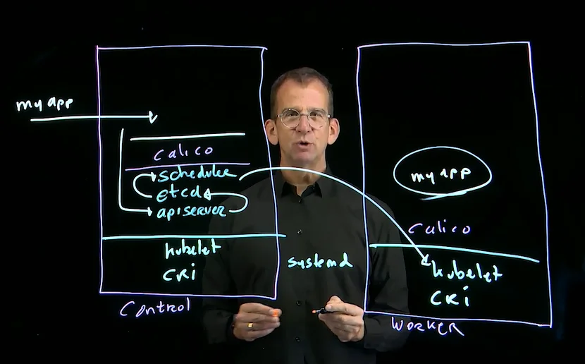

Certified Kubernetes Administrator (CKA) | LOG |
Kubernetes.io/Docs | kubectl Cheat Sheet | kubectl Reference
- Module 1 : Building a Kubernetes Cluster
- Module 2 : Running Applications
- Module 3 : Managing Kubernetes Clusters
- Module 4 Practice Exams
See /Books/IT/Containers/Kubernetes/
Lesson 1 : Kubernetes Architecture
1.1 : Vanilla Kubernetes
- From CNCF
- Releases every 4 months
- Core only.
- A fully functional cluster requires additional components from the Kubernetes ecosystem; CNCF Projects
This course builds a cluster from Vanilla Kubernetes using
kubeadm.
1.3 : Kubernetes Distributions
- Add products from the Kubernetes ecosystem and provide support.
- Stable, not the cutting edge; lag by one or two versions.
- Some distributions are opinionated, offering one solution; others not, offering many solutions.
- Common distributions
- Cloud
- Amazon Elastic Kubernetes Services (EKS)
- Azure Kubernetes Service (AKS)
- Google Kubernetes Engine (GKE)
- On Premise
- OpenShift
- Google Antos
- Rancher
- Canonical Charmed Kubernetes
- Minimal (learning) Solutions
- Minikube
- K3s
- Cloud
1.4 : Node Roles
- Control Plane runs Kubernetes core services and agents, but no user workloads.
- Worker Plane runs user workloads and Kubernetes agents.
- CRI (Container Runtime Interface); all nodes have the container runtime, which is required to run containerized workloads.
kubeletruns on every noed; thesystemdservice responsible for running orchestrated containers as Pods on any node.

Lesson 2 : Creating a K8s Cluster with kubeadm
2.1 : Node Requirements of kubeadm
Must Have:
- 2 nodes running Ubuntu or CentOS
- Course runs 3 nodes.
- 2 CPU on control-plane node
- Course runs 1 control node and 2 worker nodes.
- 2GiB Memory per machine
- Network connectivity between nodes
- Software installed:
- Container runtimes:
containerd(setup-container.sh)- CRI-O
- Docker Engine
- Mirantis Container Runtime
- Kubernetes Tools (
setup-kubetools.sh)kubeadmkubeletkubectl
- Container runtimes:
2.2 : Node Networking
- Node-to-node comms; handled by the physical network
- External-to-service comms; handled by K8s Service resources.
- Pod-to-service comms; handled by K8s Service resources.
- Pod-to-pod comms; handled by network plugin/addon.
- Container-to-container comms; within one pod; handled within the Pod
Network Add-on : Network Plugins
Kubernetes networks are SDNs (software-defined networks). The Pod Network, for pod-to-pod communications, requires a Network Add-on because Vanilla Kubernetes includes only the CNI (Container Network Interface) for any such network add-on.
- Kubernetes 1.28 supports Container Network Interface (CNI) plugins for cluster networking.
- A CNI plugin is required to implement the Kubernetes network model.
- Must use a CNI plugin that is compatible with the v0.4.0+ of CNI spec.
- Recommended to use plugin that abides v1.0.0+ of CNI spec.
Features of this Pod-to-Pod SDN vary per Network Add-on. The most common features are:
- NetworkPolicy for
Ingress/Egress(policyTypes) isolation (limits) per rule(s);ingress:- fromand/oregress:- torules. - IPv6
- RBAC (Role Based Access Control)
Common Network Add-ons (Plugins)
- Calico: the most common, with support for all relevant features.
- Flannel: prior favorite, but does not support NetworkPolicy
- Multus: OpenShift default plugin; works with several network plugins.
- Weave: another popular plugin supporting common features.
2.3 : Cluster Initialization
- On 1st control node:
sudo kubeadm init ...
- On all other nodes:
sudo kubeadm join ...- With differring command options for workers versus control nodes.
Phases of kubeadm init
2.4 : Installing the Cluster
Reference @ Kubernetes.io : Bootstrapping clusters with kubeadm
This course is of a 3 node cluster; one control node and two worker nodes. Ubuntu 22.04 Server is running on all three.
We run AlmaLinux 8 on 3 Hyper-V nodes. Each running AlmaLinux 8 (
AlmaLinux-8.8-x86_64-minimal.iso).
Steps:
- Prep all three nodes
Course; manually provision at eadh node.
# Install some helper pkgs sudo apt install -y vim git # Clone the course's GitHub repo cd ~ git clone https://github.com/sandervanvugt/cka # Install CRI sudo ~/cka/setup-containerd-cka.sh # Install kubetools sudo ~/cka/setup-kubetools-cka.shOurs; provision all ssh-configured machines from this local machine (Ansible-like).
./provision.sh- See
provision.sh
- See
Install the cluster:
# Only on the control node(s) sudo kubeadm initWarnings/Errors per attempt (success @ 2nd attempt)
kubeadm.init.1.log- Fix:
- Run
setup-env.sh - Install
tc;sudo dnf -y install iproute-tc - Add hostname,
a1.local, to its/etc/hostsfile. - Unset Dynamic memory at Hyper-V; set to
2GiB.
- Run
- Fix:
kubeadm.init.2.log- Fix:
- Mod and push newer "sandbox" image (
pause:3.9)etc.containerd.config-cka.toml[plugins."io.containerd.grpc.v1.cri"] sandbox_image = "registry.k8s.io/pause:3.9"See
provision.sh
- Mod and push newer "sandbox" image (
- Fix:
kubeadm resetis also useful.kubectl get nodeswill show "NotReady" until Calico addon installed.Setup the client (
kubectl):Follow this instruction provided during
kubeadm init.mkdir ~/.kube sudo cp -i /etc/kubernetes/admin.conf ~/.kube/config sudo chown $(id -u):$(id -g) ~/.kube/configThe source file must be of the control node; pull and copy it to worker nodes as needed, but only after running
kubeadm init. Seeetc.kubernetes.admin.confInstall Calico network add-on
kubectl apply -f https://docs.projectcalico.org/manifests/calico.yamlOBSOLETE : See Install Calico networking and network policy for on-premises deployments
Add worker nodes, execute at each worker node.
# This command is printed at `kubeadm init` sudo kubeadm join 192.168.0.78:6443 \ --token z90mka.466wi2di03u30eu1 \ --discovery-token-ca-cert-hash \ sha256:57254224a86ab7d64b98255dc6907d4df2ab22ea2dd058ad70b94ba136b78395May add
--apiserver-advertise-address xx.xx.xx.xxSee
setup-container-rhel.sh(RHEL/AlmaLinux version)- These scripts require human interaction (user input) that cannot be removed.
This token expires. If a token is needed thereafter, then just run (on the target/worker node):
sudo kubeadm token create --print-join-command
2.5 : kubeadm init
Has many options. See kubeadm init --help.
2.6 : Adding Nodes
Run this command on the master node, and its printed command on the target worker node(s).
sudo kubeadm token create --print-join-command
Prints:
kubeadm join 192.168.0.78:6443 --token z90mka.466wi2di03u30eu1 --discovery-token-ca-cert-hash sha256:57254224a86ab7d64b98255dc6907d4df2ab22ea2dd058ad70b94ba136b78395
Do this programmatically, remotely through SSH:
master=a1
workers='a2 a3'
ssh $master 'sudo kubeadm token create --print-join-command' \
|tee kubeadm.join-command.log
printf "%s\n" $workers |xargs -I{} ssh {} "
sudo $(<kubeadm.join-command.log)
"
Validate
ssh $ANY_NODE kubectl get nodes
NAME STATUS ROLES AGE VERSION
a1.local Ready control-plane 2d14h v1.28.1
a2.local Ready <none> 17m v1.28.1
a3.local Ready <none> 12m v1.28.1
- Only after configuring the client (
kubectl) to the master node.- See
~/.kube/config
- See
2.7 : Configuring the Client (kubectl)
Per instructions provided during kubeadm init, copy the kubeadm config file (admin.conf) to kubectls config file (~/.kube/config). Note that source file must be of a master node.
Interactively configure a control-node machine:
mkdir $HOME/.kube
sudo cp -i /etc/kubernetes/admin.conf $HOME/.kube/config
sudo chown $(id -u):$(id -g) $HOME/.kube/config
sudo chmod 0600 $HOME/.kube/config
- Printed @
sudo kubeadm init
Programmatically configure all machines from the local machine:
master='a1'
all='a1 a2 a3'
src_file=etc.kubernetes.admin.conf
src_remote=/etc/kubernetes/admin.conf
# Create local source (src) of admin.conf from master node (dst)
ssh $master "sudo cat $src_remote" tee provision/rhel/$src_file
# Copy source from local to remote at each node
printf "%s\n" $all |xargs -I{} scp provision/rhel/$src_file {}:$src_file
# Copy remote src to at each node
printf "%s\n" $all |xargs -I{} ssh {} "
mkdir -p ~/.kube
sudo cp -p $src_file ~/.kube/config
sudo chown $(id -u):$(id -g) ~/.kube/config
sudo chmod 0600 ~/.kube/config
"
Equivalently, if on a control node, configure kubectl
by setting its KUBECONFIG environment:
KUBECONFIG=/etc/kubernetes/admin.conf
- Export that from a bash config script under
/etc/profile.d/
Copy the bash config script, k8s.sh, to /etc/profile.d/
machines='a1 a2 a3'
file=k8s.sh
dir=/etc/profile.d
# Copy local file to remote home of each machine
printf "%s\n" $machines |xargs -I{} scp provision/$file {}:$file
# Copy remote home file to target dir, and reset file owner/perms, at each machine.
printf "%s\n" $machines |xargs -I{} ssh {} "
sudo cp -p $file $dir/
sudo chown root:root $dir/$file
sudo chmod 0644 $dir/$file
"
For more advanced user configuration, users must be created and provided with authorizations using RBAC.
Context
Three params that group client access parameters, each given a convenient name. A type of namespacing.
- Cluster: target cluster
- Namespace: the default namespace for the context.
- User: The user account of the context. (Lesson 10)
Three kubectl commands:
kubectl use-context # Use the context
kubectl set-context # Change the context
kubectl config view # View the context : contents of the ~/.kube/config file
- See functions
knandkxatk8s.sh.
Context store @ ~/.kube/config
$ kubectl config view # YAML
apiVersion: v1
clusters:
- cluster:
certificate-authority-data: DATA+OMITTED
server: https://192.168.0.78:6443
name: kubernetes
contexts:
- context:
cluster: kubernetes
user: kubernetes-admin
name: kubernetes-admin@kubernetes # Context Name
current-context: kubernetes-admin@kubernetes # <CLUSTER_USER>@<CLUSTER_NAME>
kind: Config
preferences: {}
users:
- name: kubernetes-admin
user:
client-certificate-data: DATA+OMITTED
client-key-data: DATA+OMITTED
Connectivity Parameters (per Context)
A Kubernetes cluster is defined by its endpoint and its TLS certificate signed by the cluster CA.
Create new context
Cluster :
config set-clustercluster_name=devcluster cluster_ip='192.168.29.150' cluster_ca_cert=clusterca.crt kubectl config \ --kubeconfig=~/.kube/config \ set-cluster $cluster_name \ --server=https://$cluster_ip \ --certificate-authority=$cluster_ca_certNamespace :
create nsns=devspace kubectl create ns $nsUser :
config set-credentialsuname=$USER kubectl config \ --kubeconfig=~/.kube/config \ set-credentials $uname \ --client-certificate=${uname}.crt \ --client-key=${uname}.keyUser account defined by its X.509 certificates or other.
- See Lesson 10.
Define and Use the New Context : set-context
context_name=${uname}@${cluster_name}
kubectl set-context $context_name \
--cluster=$cluster_name \
--namespace=$ns \
--user=$uname
Lesson 2 Lab : Build a Kubernetes Cluster
Task:
Build a Kubernetes Cluster
Solution:
Environment of CKA Exam has CRI and kubetools already installed.
@ Control node
sudo kubeadm init
Command output prints (almost) everything needed
to configure the client (kubectl)
and to have other nodes join the cluster.
Copy/Paste from there
# Configure
mkdir $HOME/.kube
sudo cp -i /etc/kubernetes/admin.conf $HOME/.kube/config
sudo chown $(id -u):$(id -g) $HOME/.kube/config
sudo chmod 0600 $HOME/.kube/config
# Verify
kubectl get all
Not printed during kubeadm init is the network addon:
kubectl apply -f https://docs.projectcalico.org/manifests/calico.yaml
Depricated : See Install Calico networking and network policy for on-premises deployments
kubectl get nodes
Lesson 3 : Deploying Kubernetes Applications
3.1 : Using Deployments
- Standard way for running containers
- Responsible for starting Pods in a scalable way
- Uses ReplicaSet to manage scalability
- Has RollingUpdate feature for zero-downtime application updates.
Imperatively:
kubectl create deploy ...kubectl deploy -h |less name=ngx img=nginx n=3 kubectl create deployment $name --image=$img --replicas=$n kubectl get all
3.2 : Running Agents with DaemonSets
- DaemonSets are commonly used to run Agents
- Example is
kube-proxy, which must run on every cluster node.
- Example is
- Rare use is to run Workloads
- One instance per node
If a DaemonSet must run on a control-plane node, then it must have a
tolerationconfigured to allow that regardless of the control-planetaints. (Default configurationtaints:such that DaemonSets/Workloads do not run on control nodes.)apiVersion: apps/v1 kind: DaemonSet ... spec: ... template: ... spec: tolerations: # these tolerations are to have the daemonset runnable on control plane nodes # remove them if your control plane nodes should not run pods - key: node-role.kubernetes.io/control-plane operator: Exists effect: NoSchedule - key: node-role.kubernetes.io/master operator: Exists effect: NoSchedule
Inspect the calico-node DaemonSet;
filter for tolerations: using yq.
kubectl get ds -A
k -n kube-system get ds calico-node -o yaml |yq .spec.[].[].tolerations
null
null
- effect: NoSchedule
operator: Exists
- key: CriticalAddonsOnly
operator: Exists
- effect: NoExecute
operator: Exists
null
Work @ [u1@a1 devops]
Create a DaemonSet
# Create approximate YAML : `kubectl create deploy ...`
name=ds1
k create deploy $name --image=nginx --dry-run=client -o yaml |tee $name.yaml
# Edit : change "kind:" to DaemonSet,
# and delete "replicas:", "strategy:", "status:", and all timestamp references.
vim $name.yaml
# Create the DaemonSet
k apply -f $name.yaml
Verify
$ k get ds
NAME DESIRED CURRENT READY UP-TO-DATE AVAILABLE NODE SELECTOR AGE
ds1 2 2 2 2 2 <none> 4m1s
$ k get pods -o wide
NAME READY STATUS RESTARTS AGE IP NODE NOMINATED NODE READINESS GATES
ds1-8p8df 1/1 Running 0 4m26s 172.16.247.65 a3.local <none> <none>
ds1-mtcd7 1/1 Running 0 4m26s 172.16.252.1 a2.local <none> <none>
- Our DaemonSet is not running on the control node
"because control nodes typically do not run Workloads".
(We did not add
tolerations:.)
3.3 : Using StatefulSets
What:
- More complicated than a Deployment
- Guarantees about ordering and uniqueness of Pods
- Maintains a sticky identifier for each Pod
- Its Pods are not interchangable
- Its Pods are matched with their existing volumes
When:
- Use a Deployment lest the subject App/Container requires any:
- Stable and unique network identifiers
- Stable persistent storage
- Ordered, graceful deployment and scaling
- Ordered and automated rolling update
Why:
- Storage must be automatically provisioned by a Provisioner. Pre-provisioning is challenging, as volumes need to be dynamically added when new Pods are scheduled.
- StatefulSet deletion does not delete its associated volumes.
- Requires a headless (
clusterIP: None) Service resource to manage the network identity of its Pods. - Pods are not guaranteed to be stopped/deleted by StatefulSet delete, so recommendation is to scale Pods down to zero beforehand.
StatefulSet Demo
Since storage provisioning is not covered yet, the course runs this demo on a Minikube cluster, which has a built in Provisioner
StatefulSet YAML looks much like that of Deployment, yet has a few distinctive features:
spec.serviceName$ k explain sts.spec.serviceNameGROUP: apps KIND: StatefulSet VERSION: v1 FIELD: serviceName <string> DESCRIPTION: serviceName is the name of the service that governs this StatefulSet. This service must exist before the StatefulSet, and is responsible for the network identity of the set. Pods get DNS/hostnames that follow the pattern: pod-specific-string.serviceName.default.svc.cluster.local where "pod-specific-string" is managed by the StatefulSet controller.spec.volumeClaimTemplates$ k explain sts.spec.volumeClaimTemplates
3.4 : The Case for Running Individual Pods
AKA Naked Pods.
- Disadvantages:
- No workload protection
- No load balancing
- No RollingUpdate
- Used for testing, troubleshooting, and analyzing.
- In all other cases, use Deploymnet, Daemonset, or StatefulSet.
Run a Naked Pod
kubectl run -h |less
name=bbox
img=busybox
kubectl run $name --image=$img -- sleep 1d
3.5 : Managing Pod Initialization
Init Containers
Init containers run to completion before the app containers of that Pod are started.
Use whenever preparation (preliminary setup) is required before running the main (app) container.
Demo : Get blueprint (YAML) from Kubernetes.io: pods/init-containers.yaml
(See link of this section.)
@ Local host machine
vim init.yaml # Copy/paste the blueprint YAML into here
scp init.yaml a1:devops/init.yaml # Push to node a1
ssh a1 # SSH into a1 : See ~/.ssh/config
@ [u1@a1 devops]
vim init.yaml
- Remove volumes and such, and replace command to
have init container merely sleep for
30s(and then die).
Deploy it
$ k apply -f init.yaml
pod/init-demo created
$ k get pod -w
NAME READY STATUS RESTARTS AGE
init-demo 0/1 Init:0/1 0 9s
init-demo 0/1 PodInitializing 0 32s
init-demo 1/1 Running 0 33s
Extra-curricular : Debug Cluster Failure
Problem: Pod stuck in "Terminating" state
Solution: Reconfigure the misconfigured nodes.
TL;DR
Findings:
- The
containerd.servicewas notenabledon nodesa2anda3. - Swap was not disabled on node
a3.
The advised debug/fix sequence:
# 1. Check if Pod is the issue
k describe pod init-demo # Exit Code: 0, Events: <none>
# 2. Check node status
k get node # STATUS: NotReady at nodes a2 and a3
# 3. Chedk "Conditions:"
k describe node a2.local # MemoryPressure Unknown NodeStatusUnknown Kubelet stopped posting
# 4. Check kubelet status at one of the bad nodes
ssh a2 'systemctl status kubelet.service' # kubelet.service: Main process exited, code=exited, status=1/FAILURE
# 5. Try restart kubelet service at a bad node
ssh a2 'sudo systemctl restart kubelet.service' # Fails again immediately
# 6. Read kubelet log
ssh a2 sudo journalctl -u kubelet # Error...: dial unix /var/.../containerd.sock: connect: no such file
# 7. Reconfigure containerd.service at misconfigured nodes
printf "%s\n" a1 a2 a3 |xargs -I{} ssh {} sudo systemctl enable --now containerd.service
# 8. Recheck node status
ssh a1 kubectl get node # Nodes a1 and a2 okay, but a3 still NotReady
# 9. Inspect kubelet log of the problem node (a3)
ssh a3 journalctl -u kubelet # ..."command failed" err="failed to run Kubelet: running with swap on is not supported...
# 10. Reconfigure : disable swap
printf "%s\n" a2 a3 |xargs -I{} ssh {} 'sudo swapoff -a; ...'
# 11. Recheck node status
ssh a1 kubectl get node # All nodes "Ready"
Work
$ k delete -f init.yaml
pod "init-demo" deleted
$ k get pod
NAME READY STATUS RESTARTS AGE
init-demo 1/1 Terminating 0 11h
$ k describe pod init-demo
Init Containers:
bbox:
...
Image: busybox:1.28
...
Command:
sleep
30s
State: Terminated
Reason: Completed
Exit Code: 0
...
Events: <none>
$ k get node
NAME STATUS ROLES AGE VERSION
a1.local Ready control-plane 3d11h v1.28.1
a2.local NotReady <none> 21h v1.28.1
a3.local NotReady <none> 21h v1.28.1
- So, the problem is that two nodes are stuck in "
NotReady" state. This suggests either a resource issue (e.g., out of memory) or theirkubelethas crashed.
Further investigating:
$ k describe node a2.local # Several (irrelevant) fields omitted.
Conditions:
Type Status Reason Message
---- ------ ------ -------
NetworkUnavailable False CalicoIsUp Calico is running on this node
MemoryPressure Unknown NodeStatusUnknown Kubelet stopped posting node status.
DiskPressure Unknown NodeStatusUnknown Kubelet stopped posting node status.
PIDPressure Unknown NodeStatusUnknown Kubelet stopped posting node status.
Ready Unknown NodeStatusUnknown Kubelet stopped posting node status.
- So appears
kubeletcrashed.
Check kubelet status
ssh a2
$ systemctl status kubelet.service
● kubelet.service - kubelet: The Kubernetes Node Agent
Loaded: loaded (/usr/lib/systemd/system/kubelet.service; enabled; vendor preset: disabled)
Drop-In: /usr/lib/systemd/system/kubelet.service.d
└─10-kubeadm.conf
Active: activating (auto-restart) (Result: exit-code) since Sat 2023-09-09 07:51:39 EDT; 3s ago
Docs: https://kubernetes.io/docs/
Process: 8218 ExecStart=/usr/bin/kubelet $KUBELET_KUBECONFIG_ARGS $KUBELET_CONFIG_ARGS $KUBELET_KUBEADM_ARGS $KUBELET_EXTRA_ARGS (code=exited, status=1/FAILURE)
Main PID: 8218 (code=exited, status=1/FAILURE)
Sep 09 07:51:39 a2.local systemd[1]: kubelet.service: Main process exited, code=exited, status=1/FAILURE
Sep 09 07:51:39 a2.local systemd[1]: kubelet.service: Failed with result 'exit-code'.
- "
kubelet.service: Main process exited, code=exited, status=1/FAILURE",
So restart both from local host:
printf "%s\n" a2 a3 |xargs -I{} ssh {} 'sudo systemctl restart kubelet.service'
Both still crashing, so reboot
printf "%s\n" a2 a3 |xargs -I{} ssh {} 'sudo systemctl restart kubelet.service'
Both still crashing, so investgate further
ssh a3 sudo journalctl -u kubelet
Appears a containerd issue
Sep 09 07:56:48 a2.local kubelet[1062]: W0909 07:56:48.185554 1062 logging.go:59] [core] [Channel #1 SubChannel #2] grpc: addrConn.createTransport failed to connect to {
Sep 09 07:56:48 a2.local kubelet[1062]: "Addr": "/var/run/containerd/containerd.sock",
Sep 09 07:56:48 a2.local kubelet[1062]: "ServerName": "/var/run/containerd/containerd.sock",
Sep 09 07:56:48 a2.local kubelet[1062]: "Attributes": null,
Sep 09 07:56:48 a2.local kubelet[1062]: "BalancerAttributes": null,
Sep 09 07:56:48 a2.local kubelet[1062]: "Type": 0,
Sep 09 07:56:48 a2.local kubelet[1062]: "Metadata": null
Sep 09 07:56:48 a2.local kubelet[1062]: }. Err: connection error: desc = "transport: Error while dialing: dial unix /var/run/containerd/containerd.sock: connect: no such file>
Yep. The containerd.service is inactive (dead).
$ sudo systemctl status containerd.service
● containerd.service - containerd container runtime
Loaded: loaded (/usr/lib/systemd/system/containerd.service; disabled; vendor preset: disabled)
Active: inactive (dead)
Docs: https://containerd.io
Must have misconfigured. So, reconfigure all nodes from the local host machine.
$ printf "%s\n" a1 a2 a3 |xargs -I{} ssh {} '
sudo systemctl enable --now containerd.service
'
Recheck node status
$ ssh a1 kubectl get node
NAME STATUS ROLES AGE VERSION
a1.local Ready control-plane 3d11h v1.28.1
a2.local Ready <none> 21h v1.28.1
a3.local NotReady <none> 21h v1.28.1
Inspecting journalctl reveals swap is on,
so that's another misconfiguration.
$ ssh a3 journalctl -u kubelet
E0909 08:16:15.957189 1849 run.go:74] "command failed" err="failed to run Kubelet: running with swap on is not supported, please disable swap! or set --fail-swap-on flag to false. /proc/swaps contained: [Filename\t\t\t\tType\t\tSize\t\tUsed\t\tPriority /dev/dm-1
Reconfigure:
$ printf "%s\n" a2 a3 |xargs -I{} ssh {} '
sudo swapoff -a
sudo systemctl stop swap.target --now
sudo systemctl disable swap.target --now
grep -v swap /etc/fstab |sudo tee /etc/fstab
'
Check now ...
$ ssh a1 kubectl get node
NAME STATUS ROLES AGE VERSION
a1.local Ready control-plane 3d11h v1.28.1
a2.local Ready <none> 21h v1.28.1
a3.local Ready <none> 21h v1.28.1
Fixed!
3.6 : Scaling Applications
Manually @ Deployment, ReplicaSet or StatefulSet
kubectl scale deploy $name --replicas 3
HorizontalPodAutoscaler (Not on CKA Exam.)
Horizontal scaling means that the response to increased load is to deploy more Pods. This is different from vertical scaling, which for Kubernetes would mean assigning more resources (for example: memory or CPU) to the Pods that are already running for the workload.
3.7 : Using Sidecar Containers for Application Logging
Multi-container Pods are for specific use cases:
- Sidecar: provides addional functionality to the main container.
- Ambassador: a proxy to connect containers externally.
- Adapter: to standardize/normalize main container output
Sidecar Containers are used when an additional container is needed to modify or present data generated by the main container.
Sidecar Workloads:
- Batch or AI/ML workloads, or other Pods that run to completion.
- Network proxies that start up before any other container in the manifest, all of which may use the proxy container's services.
- Log collection containers, which can now start before any other container and run until the Pod terminates.
- Jobs, which can use sidecars for any purpose without Job completion being blocked by the running sidecar.
Multi-container Storage | sidcar_log.yaml
Multi-container Pods often use shared storage (PVC/PV) to which the main container writes and the sidecar reads, or vice versa.
Lesson 3 Lab : Running a DaemonSet
Task
- Create a DaemonSet with the name nginxdaemon.
- Ensure it runs an Nginx Pod on every worker node.
Solution
Copy/Paste DaemonSet Spec from Kubernetes.io > Search : DaemonSet.
See daemonset.yaml.
Or create a deployment and modify that:
☩ kubectl create deploy x --image nginx --dry-run=client -o yaml \
|tee daemonset.yaml
# Provision
☩ scp -p daemonset.yaml a1:devops/daemonset.yaml
# Deploy
☩ ssh a1 kubectl apply -f devops/daemonset.yaml
daemonset.apps/nginxdaemon created
# Verify one per worker node
☩ ssh a1 kubectl get pod -o wide
NAME READY STATUS RESTARTS AGE IP NODE NOMINATED NODE READINESS GATES
nginxdaemon-d8pvc 1/1 Running 0 22s 172.16.247.66 a3.local <none> <none>
nginxdaemon-q8kft 1/1 Running 0 22s 172.16.252.5 a2.local <none> <none>
Lesson 4 : Managing Storage
4.1 : Understanding Kubernetes Storage Options
Best to decouple Pod from Volume, so manifest works in different cluster environments.
- Pod
spec.volumes: Specifiy its volume(s)spec.volumes[]
spec.containers[*].volumeMounts: Specify each volume's mount point.- Pod may have multiple mount points to one volume
by using
subPathORsubPathExpr.- See
kubectl explain pod.spec.containers.volumeMounts.subPath
- See
- Pod may have multiple mount points to one volume
by using
- PV : Persistent Volume
- Site specific
- PVC : Persistent Volume Claim
- Finds an available PV in current environment that matches the requestor's (Pod's) claim.
- Bound if found.
- StorageClass : API object representing a Provisioner.
- Dynamic Provisioning : Allocate storage on demand (per PVC).
- Intercepts PVCs and creates a PV (provisions new storage) whenever none exist that match the claim.
- Provisioner
- The required workhorse of a StorageClass.
- Provisions the site-specific storage.
- May be used as a Selector Label in PV
to allow for manual provisioning per PVC.
Such is required to bind PVC to PV.
- See
pv.spec.storageClassName
- See
- Dynamic Provisioning : Allocate storage on demand (per PVC).
4.2 : Accessing Storage Through Pod Volumes
Note that "Pod Volumes" is not used anywhere at Kubernetes.io, rather just "Volumes".
Pod Volumes are part of the Pod specification.
- Storage reference is hard coded in the Pod manifest.
- Can be used for any storage type.
Two common:
hostPath: Persists, but is bound to one node. Analogous to Docker's Bind Mount. Very useful for dev/test/debug.emptyDir| Seemorevolumes.yaml- Ephemeral
- May be shared
shared_volume.yaml
Demo
k apply -f shared_volume.yaml
k describe pod sv
# Write to shared vol from one container
k exec -it sv -c centos1 -- touch /centos1/centosfile
# Read from shared vol from other container
k exec -it sv -c centos2 -- ls /centos1/centosfile
4.3 : Configuring Persistent Volume PV Storage
- PersistentVolume (PV) is an API resource that represents specific storage
- Created either manually, or automatically (dynamically) using a StorageClass object that is backed by a Provisioner
- Pods do not connect to PV directly, but rather through a PersistentVolumeClaim (PVC)
- PVC is a request (claim) for storage (PV), by size (
pv.spec.capacity.storage) and mode (pv.spec.).
- PVC is a request (claim) for storage (PV), by size (
pv.yaml
...
spec:
# Bogus StorageClass : used here as a Selector Label
storageClassName: demo
capacity:
storage: 2Gi
accessModes:
- ReadWriteOnce
hostPath:
path: "/mydata"
Demo
@ [u1@a1 devops]
$ k apply -f pv.yaml
persistentvolume/pv-volume created
$ k get pv
NAME CAPACITY ACCESS MODES RECLAIM POLICY STATUS CLAIM STORAGECLASS REASON AGE
pv-volume 2Gi RWO Retain Available demo 4s
$ k describe pv
Name: pv-volume
Labels: type=local
Annotations: <none>
Finalizers: [kubernetes.io/pv-protection]
StorageClass: demo
Status: Available
Claim:
Reclaim Policy: Retain
Access Modes: RWO
VolumeMode: Filesystem
Capacity: 2Gi
Node Affinity: <none>
Message:
Source:
Type: HostPath (bare host directory volume)
Path: /mydata
HostPathType:
Events: <none>
4.4 : Configuring PVCs
pvc.yaml | pv.yaml
...
spec:
# Bogus StorageClass : Used here as Label (See pv.yaml)
storageClassName: demo
accessModes:
- ReadWriteOnce
resources:
requests:
storage: 1Gi
Demo
@ [u1@a1 devops]
$ k apply -f pvc.yaml #... sans StorageClass
persistentvolumeclaim/pv-claim created
$ k get pvc
NAME STATUS VOLUME CAPACITY ACCESS MODES STORAGECLASS AGE
pv-claim Pending demo 28s
$ k describe pvc pv-claim
Name: pv-claim
Namespace: default
StorageClass:
Status: Pending
Volume:
Labels: <none>
Annotations: <none>
Finalizers: [kubernetes.io/pvc-protection]
Capacity:
Access Modes:
VolumeMode: Filesystem
Used By: <none>
Events:
Type Reason Age From Message
---- ------ ---- ---- -------
Normal FailedBinding 4s (x2 over 8s) persistentvolume-controller no persistent volumes available for this claim and no storage class is set
$ k delete -f pvc.yaml
$ vim pvc.yaml # Add `StorageClass: demo`
$ k apply -f pvc.yaml
persistentvolumeclaim/pv-claim created
# Okay now that has matching StorageClass (as Selector Label)
# Lacking a real StorageClass (backed by a Provisioner),
# the entire PV (2Gi) is bound, even though only 1Gi was claimed (requested).
$ k get pvc,pv
NAME STATUS VOLUME CAPACITY ACCESS MODES STORAGECLASS AGE
persistentvolumeclaim/pv-claim Bound pv-volume 2Gi RWO demo 20m
NAME CAPACITY ACCESS MODES RECLAIM POLICY STATUS CLAIM STORAGECLASS REASON AGE
persistentvolume/pv-volume 2Gi RWO Retain Bound default/pv-claim demo 25m
- Lacking StorageClass Provisioner for Dynamic Provisioning, the PVC claims entire PV capacity regardless.
4.5 : Configuring Pod Storage with PV and PVCs
pv-pod.yaml | pvc.yaml | pv.yaml
@ [u1@a1 devops]
# Copy/Paste YAML into a VM
$ cat <<EOH >pv-pod.yaml
... paste here
EOH
$ k apply -f pv-pod.yaml
pod/pv-pod created
$ k get pod,pvc,pv
NAME READY STATUS RESTARTS AGE
pod/nginxdaemon-d8pvc 1/1 Running 0 3h9m
pod/nginxdaemon-q8kft 1/1 Running 0 3h9m
pod/pv-pod 1/1 Running 0 7s
NAME STATUS VOLUME CAPACITY ACCESS MODES STORAGECLASS AGE
persistentvolumeclaim/pv-claim Bound pv-volume 2Gi RWO demo 33m
NAME CAPACITY ACCESS MODES RECLAIM POLICY STATUS CLAIM STORAGECLASS REASON AGE
persistentvolume/pv-volume 2Gi RWO Retain Bound default/pv-claim demo 37m
# Write to the PV from its mount at Pod
$ k exec -it pv-pod -- touch /usr/share/nginx/html/foo
# The PV is a hostPath (bind mount), but at which node? Wherever Pod is running:
$ k get pod pv-pod -o wide
NAME READY STATUS RESTARTS AGE IP NODE NOMINATED NODE READINESS GATES
pv-pod 1/1 Running 0 97s 172.16.252.6 a2.local <none> <none>
#... node a2
# Let's read PV from its host node (a2)
exit
@ local machine
# Read PV directly host node
$ ssh a2 ls -Ahln /mydata
total 0
-rw-r--r--. 1 0 0 0 Sep 9 14:19 foo
- Yet
/mydataexists only on that node (a2).- If that Pod dies and respawns at another node,
another
/mydatawill be created (if necessary) and bound, but the Pod will not have access to the data of prior/mydata(at its prior node).
- If that Pod dies and respawns at another node,
another
4.6 : Using StorageClass
PVs are Dynamically Provisioned per PVC by the StorageClass to which the PV belongs. (Actually, the backing Provisioner handles that.)
StorageClass can also be used as a Selector Label,
connecting PVC and PV without any actual StorageClass resource
or Provisioner. Absent any StorageClass, using it in this manner
is mandatory to affect a PVC/PV binding,
else PVC gets stuck in STATUS of "Pending".
All StorageClasses have:
sc.provisionersc.parameterssc.reclaimPolicy
PVCs that do not specify a StorageClass are handled by the Default StorageClass.
(Re)Set the Default StorageClass:
kubectl patch sc ...
ksc(){
[[ $1 ]] && {
default=$(kubectl get sc |grep default |awk '{print $1}')
[[ $default ]] && {
## If current default exists, then unset it
kubectl patch sc $default -p '{"metadata": {"annotations":{"storageclass.kubernetes.io/is-default-class":"false"}}}'
}
## Set Default StorageClass to $1
kubectl patch sc $1 -p '{"metadata": {"annotations":{"storageclass.kubernetes.io/is-default-class":"true"}}}'
}
kubectl get sc
}
4.7 : Understanding Storage Provisioners
Using an NFS Storage Provisioner
Extra-curricular : Not on CKA
- Storage Provisioner works with a StorageClass to automatically (dynamically) provide storage per PVC.
- Storage Provisioner runs as a Pod that has
access control configured through
Roles, RoleBindings, and ServiceAccounts.
- Access permissions to the API
are required to create resources.
- See Lesson 10
- Access permissions to the API
are required to create resources.
- Once operational, PVs are Dynamically Provisioned per PVC.
Demo
Configure a Storage Provisioner
Configure NFS Subdir External Provisioner using Helm (Releases)
NFS @ Ubuntu/Debian
Provision/Configure NFS Server on Control node (
a1)# Install the NFS server sudo apt -y install nfs-server # Export the share (NFS server mount point) sudo mkdir /nfsexport echo '/nfsexport *(rw,no_root_squash)' |sudo tee -a /etc/exports sudo systemctl restart nfs-serverConfigure NFS Client on Worker nodes (
a2,a3)# Install NFS client sudo apt -y install nfs-client showmount -e $ip_of_nfs_server_node
NFSv4 @ RHEL8
NFS Server @ Control Node (a1)
# Install NFS (server and client) utilities
sudo yum -y install nfs-utils
# Enable and start server (rpcbind for NFSv3)
sudo systemctl enable --now nfs-server rpcbind
# Environment
nfs_export='/nfsexport'
nfs_mnt='/mnt/nfs4'
k8s_ip='192.168.0.78'
k8s_cidr='192.168.0.0/24'
# Add local DNS resolution for NFS-server hostname
echo "$k8s_ip $(hostname)" |sudo tee -a /etc/hosts
# Export the share : Add entry to /etc/exports
sudo mkdir -p $nfs_export
echo "$nfs_export $k8s_cidr(rw,no_root_squash)" \
|sudo tee -a /etc/exports
# Export all directories by restarting the NFS service
#sudo systemctl restart nfs-server
# Export all directories *without* restarting the NFS service
sudo exportfs -rav
# Allow NFS through the firewall
sudo firewall-cmd --add-service=nfs --permanent
sudo firewall-cmd --add-service={nfs3,mountd,rpc-bind} --permanent # ??? nfs3 ???
sudo firewall-cmd --reload
# Validate : Mock client
mkdir -p $nfs_mnt
#sudo mount $k8s_ip:$nfs_export $nfs_mnt
sudo mount $(hostname):$nfs_export $nfs_mnt # DNS resolution per /etc/hosts
sudo mount -a
df -hT |grep $nfs_export
- The
no_root_squashoption disables root squashing; enables remote root user to have root privileges. This is usually required for VM installations on NFS share.
NFS Client @ Worker Nodes (a2, a3)
# Install NFS client
sudo yum -y install nfs-utils
# Environment
nfs_mnt='/mnt/nfs4'
k8s_ip='192.168.0.78'
nfs_host='a1.local'
nfs_server="$nfs_host:/nfsexport"
# Add local DNS resolution for NFS hostname
echo "$k8s_ip $nfs_host" |sudo tee -a /etc/hosts
# Find/Validate NFS server
#sudo showmount --exports $k8s_ip
sudo showmount --exports $nfs_host
#| Export list for a1.local:
#| /nfsexport 192.168.0.0/24
# Mount NFSv4 only
## mount -t nfs -o options host:/remote/export /local/directory
sudo mkdir -p $nfs_mnt
sudo chmod -R 0777 $nfs_mnt
sudo mount $nfs_server $nfs_mnt
# Confirm
df -hT |grep $nfs_mnt
# Persist across reboots : Add entry @ /etc/fstab
## host:/remote/export /local/directory nfs defaults 0 0
echo "$nfs_server $nfs_mnt nfs defaults 0 0" \
|sudo tee -a /etc/fstab
# Test
## Unmount it, and then "mount all"
sudo umount $nfs_mnt
sudo mount -a
df -hT |grep $nfs_mnt
## Write here and then read from NFS server's block device (a1:/nfsexport)
echo "Hello from $(hostname)" > $nfs_mnt/foo
- :
man mount,man nfs
4.8 : Using ConfigMaps and Secrets as Volumes
- ConfigMap : an API resource used to store site-specific data (1MB max)
- Secret : a base64-encoded ConfigMap
Either are used to store:
- Environment variable(s)
- Startup parameters
- Configuration files
- Mounted as a volume
Demo
# Environment
cm=webindex
file=index.html
dname=webserver
image=nginx
# Create cm
echo 'hello world' >$file
k create cm $cm --from-file=$file
k describe cm $cm
# Create deploy
k create deploy webserver --image nginx
# Mount cm as volume
k edit deploy webserver
# spec.template.spec
# volumes:
# - name:cmvol
# configMap:
# name: webindex
# spec.template.spec.containers
# volumemounts:
# - mountPath: /usr/share/nginx/html
# name: cmvol
# Validate deployment
k get deploy
# Validate cm is mounted
k exec webserver-xxx-yyy -- cat /usr/share/nginx/html/index.html
Lesson 4 Lab : Setting up Storage
Task:
- Create PV using the HostPath storage type to access dir
/storage - Create a file
/storage/index.htmlcontaining text 'hello lab4' - Run a Pod that uses an Nginx image and mounts the HostPath storage on the directory
/usr/share/nginx/html
Solution:
@ [u1@a1 devops]
# Push web resource to PV HostPath at each worker node.
printf "%s\n" a2 a3 |xargs -I{} ssh {} '
sudo mkdir -p /storage
echo "hello lab4" |sudo tee /storage/index.html
'
@ [u1@a1 devops]
# Apply the PV, PVC and Pod manifests
$ k apply -f lab4-pv.yaml
persistentvolume/lab4 created
$ k apply -f lab4-pvc.yaml
persistentvolumeclaim/lab4 created
$ k apply -f lab4-pod.yaml
pod/lab4 created
# Monitor the objects created
$ k get pod,pvc,pv
NAME READY STATUS RESTARTS AGE
pod/lab4 1/1 Running 0 3s
NAME STATUS VOLUME CAPACITY ACCESS MODES STORAGECLASS AGE
persistentvolumeclaim/lab4 Bound lab4 2Gi RWO bogus 8s
NAME CAPACITY ACCESS MODES RECLAIM POLICY STATUS CLAIM STORAGECLASS REASON AGE
persistentvolume/lab4 2Gi RWO Retain Bound default/lab4 bogus 14s
# Validate the mounted hostPath
$ k exec lab4 -c lab4 -- cat /usr/share/nginx/html/index.html
hello lab4
# Find node at which Pod is running
$ k get pod -o wide
NAME READY STATUS RESTARTS AGE IP NODE NOMINATED NODE READINESS GATES
lab4 1/1 Running 0 58s 172.16.252.8 a2.local <none> <none>
- If we prepend all object specifications (YAML)
with the YAML new-document declaraton, '
---', then we can thencat lab4-{pv,pvc,pod}.yaml |tee lab4.yaml, and soapply/deletewith one statement instead of three, e.g.,k apply -f lab4.yaml.
Lesson 5 : Managing Application Access
5.1 : Exploring Kubernetes Networking
Comms:
- Inter-container : by IPC (Inter-Process Communication)
- Sans IP Addresses
- Comms between Linux processes
- Inter-pod : by Network Plugins
- An SDN that assures all Pods are in same broadcast domain regardless of actual location.
- Pod-to-Service : by Service resources.
- Service-to-External : by Service + Ingress
Networks:
- Node (AKA External AKA Physical) Network
- Cluster Network (SDN)
- NAT connects Node to Cluster
- ClusterIP addresses
- NAT connects Node to Cluster
- Pod Network
- Isolated
- Pods have (cluster-internal) IP addresses
- Service connects Pod to Cluster (Network)
Services:
- Service connects Pod Network to Cluster Network, providing external access to Pods.
- Acts as load balancer for all Pods of a service endpoint.
- 3 types:
- ClusterIP (Internal IP only)
10.99.11.22: Internal IP @ Cluster Network- The default Service type.
- NodePort (Internal IP + External IP)
10.99.11.23: Internal IP @ Cluster Network198.162.0.74:32NNNExternal Node IP:PORT @ Node Network- Always an Ephemeral Port (
32000+) - NAT
- Always an Ephemeral Port (
- LoadBalancer
- Cloud providers may offer a load balancer that routes traffic to Service of either NodePort- or ClusterIP- type.
- ClusterIP (Internal IP only)
svc.spec.portsis the set (array) of port configurations upon which a Service listens. Each element may declare:port:is the listening port.targetPort:is the Pod port.- A port forwarding (map) of
port: - Defaults to
port:value. - May bind to Pod port by name (versus number) if also declared in
pod.spec.container.ports.containerPort.name. This is preferable, so the port number is declared only in the Pod specification.
- A port forwarding (map) of
protocol:(TCP,UDP)
Ingress:
- External HTTP(S) connections for Services of ether type, NodePort or ClusterIP.
- Kubernetes Resource (object)
- Integrated into Kubernetes API server.
- Alternative to External load balancer.
Gateway:
- Newer API
- Beyond Ingress
5.2 : Understanding Network Plugins
- Not included in Vanilla Kubernetes.
- Must install after cluster initialization.
- CNI @ K8s v1.28+ (Container Network Interface)
- Required to implement K8s Network Model (CNCF)
- Assures every Pod is assigned an IP address.
- CNI v0.4.0+ is required
- CNI v1.0.0+ is recommended
- Required to implement K8s Network Model (CNCF)
- Plugin functionality varies by Plugin.
- Calico implements NetworkPolicy.
5.3 : Using Services to Access Applications
- Service resources provide access to Pods
- Service performs load balancing for its endpoints having multiple replicas (Pods).
Service Types:
- ClusterIP – Cluster-scoped (virtual) IP address; service exposed only to cluster network (internal to cluster).
- NodePort – service exposed at specified port of each node's IP address.
So, service is externally reachable (from outside the cluster) at
NodeIP:NodePort. - LoadBalancer – External load balancer (typcially provided by cloud vendor) that routes traffic to K8s Service of either NodePort or ClusterIP type.
- ExternalName – Service is mapped to a
DNS CNAMErecord.
Configure a Service
Recommended method
$ kubectl expose deploy $dName --type=NodePort --port=$svcPort --name=$svcName- Service resource created has
Label: app=$dName, andSelector: app=$dName $svcPorttypically mapped totargetPort(container/app port)
- Service resource created has
Alternative method
$ kubectl create service ...
Demo
[u1@a1 ~]$ kubectl create deploy ngx --image nginx --replicas=3
deployment.apps/ngx created
[u1@a1 ~]$ k get pods --selector app=ngx -o wide
NAME READY STATUS RESTARTS AGE IP NODE NOMINATED NODE READINESS GATES
ngx-65fcf759fd-glvjd 1/1 Running 0 23s 172.17.252.1 a2.local <none> <none>
ngx-65fcf759fd-l49pk 1/1 Running 0 23s 172.17.252.2 a2.local <none> <none>
ngx-65fcf759fd-vw5gb 1/1 Running 0 23s 172.17.247.65 a3.local <none> <none>
[u1@a1 ~]$ k expose deploy ngx --type=NodePort --port=80
service/ngx exposed
[u1@a1 ~]$ k get all --selector app=ngx
NAME READY STATUS RESTARTS AGE
pod/ngx-65fcf759fd-glvjd 1/1 Running 0 64s
pod/ngx-65fcf759fd-l49pk 1/1 Running 0 64s
pod/ngx-65fcf759fd-vw5gb 1/1 Running 0 64s
NAME TYPE CLUSTER-IP EXTERNAL-IP PORT(S) AGE
service/ngx NodePort 10.103.65.42 <none> 80:32466/TCP 20s
NAME READY UP-TO-DATE AVAILABLE AGE
deployment.apps/ngx 3/3 3 3 64s
NAME DESIRED CURRENT READY AGE
replicaset.apps/ngx-65fcf759fd 3 3 3 64s
[u1@a1 ~]$ k describe svc ngx
Name: ngx
Namespace: kube-system
Labels: app=ngx # Label is added by kubernetes
Annotations: <none>
Selector: app=ngx # Selector is added by kubernetes
Type: NodePort
IP Family Policy: SingleStack
IP Families: IPv4
IP: 10.103.65.42
IPs: 10.103.65.42
Port: <unset> 80/TCP
TargetPort: 80/TCP
NodePort: <unset> 32466/TCP # Ephemeral port
Endpoints: 172.17.247.65:80,172.17.252.1:80,172.17.252.2:80 # Pod IP addresses
Session Affinity: None
External Traffic Policy: Cluster
Events: <none>
Service failing intermittently
# Get node IP addresses
$ k get node -o wide
NAME STATUS ROLES AGE VERSION INTERNAL-IP EXTERNAL-IP OS-IMAGE KERNEL-VERSION
CONTAINER-RUNTIME
a1.local Ready control-plane 6h10m v1.28.1 192.168.0.81 <none> AlmaLinux 8.8 (Sapphire Caracal) 4.18.0-477.10.1.el8_8.x86_64
containerd://1.6.22
a2.local Ready <none> 3h54m v1.28.1 192.168.0.79 <none> AlmaLinux 8.8 (Sapphire Caracal) 4.18.0-477.10.1.el8_8.x86_64
containerd://1.6.22
a3.local Ready <none> 3h54m v1.28.1 192.168.0.80 <none> AlmaLinux 8.8 (Sapphire Caracal) 4.18.0-477.10.1.el8_8.x86_64
# cURL at each node : all but one fail
$ curl -I --connect-timeout 1 192.168.0.79:32466
Debug ...
Extra-curricular : Debug cluster
Investigating the failing service revealed that Calico pods (of DaemonSet) are failing on all nodes.
NAME READY STATUS RESTARTS AGE
calico-kube-controllers-7ddc4f45bc-mhpx6 1/1 Running 0 4h2m
calico-node-4hcxw 0/1 Running 0 4h2m
calico-node-5fr67 0/1 Running 0 3h56m
calico-node-6hmbv 0/1 Running 0 3h56m
...
Try turning off firewalld on all nodes
all='a1 a2 a3'
printf "%s\n" $all |xargs -I{} ssh {} "
sudo systemctl stop firewalld
sudo systemctl disable firewalld
"
That seems to have fixed it
[u1@a1 ~]$ k get pod --selector=k8s-app=calico-node
NAME READY STATUS RESTARTS AGE
calico-node-4hcxw 1/1 Running 0 4h20m
calico-node-5fr67 1/1 Running 0 4h13m
calico-node-6hmbv 1/1 Running 0 4h13m
So, try running the pod and svc, and hitting endpoint from the outside.
[u1@a1 ~]$ curl -sI --connect-timeout 1 192.168.0.81:32149 |grep HTTP
HTTP/1.1 200 OK
[u1@a1 ~]$ curl -sI --connect-timeout 1 192.168.0.80:32149 |grep HTTP
HTTP/1.1 200 OK
[u1@a1 ~]$ curl -sI --connect-timeout 1 192.168.0.79:32149 |grep HTTP
HTTP/1.1 200 OK
- Success!
Okay. Now turn firewalld back on and set as instructed on all nodes.
all='a1 a2 a3'
printf "%s\n" $all |xargs -I{} ssh {} "
sudo systemctl enable --now firewalld
"
all='a1 a2 a3'
printf "%s\n" $all |xargs -I{} ssh {} "
## @ All nodes
sudo firewall-cmd --zone=trusted --add-interface=cni0 --permanent
sudo firewall-cmd --add-port=8090/tcp --permanent
sudo firewall-cmd --add-port=10250/tcp --permanent
sudo firewall-cmd --add-port=10255/tcp --permanent
sudo firewall-cmd --add-port=8472/udp --permanent
## @ Master node
#sudo firewall-cmd --add-port=6443/tcp --permanent
"
ssh a1 sudo 'firewall-cmd --add-port=6443/tcp --permanent'
Calico nodes running okay, but service is unreliable.
[u1@a1 ~]$ seq 79 81 |xargs -IX curl -sI --connect-timeout 1 192.168.0.X:32149 |grep HTTP
[u1@a1 ~]$ seq 79 81 |xargs -IX curl -sI --connect-timeout 1 192.168.0.X:32149 |grep HTTP
HTTP/1.1 200 OK
HTTP/1.1 200 OK
[u1@a1 ~]$ seq 79 81 |xargs -IX curl -sI --connect-timeout 1 192.168.0.X:32149 |grep HTTP
HTTP/1.1 200 OK
Turn off firewalld again, and hit the service
[u1@a1 ~]$ seq 79 81 |xargs -IX curl -sI --connect-timeout 1 192.168.0.X:32149 |grep HTTP
HTTP/1.1 200 OK
HTTP/1.1 200 OK
HTTP/1.1 200 OK
[u1@a1 ~]$ seq 79 81 |xargs -IX curl -sI --connect-timeout 1 192.168.0.X:32149 |grep HTTP
HTTP/1.1 200 OK
HTTP/1.1 200 OK
HTTP/1.1 200 OK
[u1@a1 ~]$ seq 79 81 |xargs -IX curl -sI --connect-timeout 1 192.168.0.X:32149 |grep HTTP
HTTP/1.1 200 OK
HTTP/1.1 200 OK
HTTP/1.1 200 OK
- Reliable sans
firewalld
5.4 : Running an Ingress Controller
Understanding Ingress | Ingress Resource
- Ingress proper is a Kubernetes resource; an API object that exposes HTTP(S) routes, providing external access to cluster Services.
- Yet ingress functionality is implemented only by an Ingress Controller that is declared by the Ingress resource. The controller is a 3rd-party proxy. The pair is referred to as "ingress".
- Works with external DNS to provide URL-based access to Kubernetes applications.
- Two parts:
- An HTTP(S) load balancer available on external network
- Kubernetes ecosystem has evolved many Ingress Controllers AKA Ingress Load Balancers, but the K8s core (Vanilla Kubernetes) contains none.
- API resource that communicates with Service resources through routing rules to handle back-end Pods.
- An HTTP(S) load balancer available on external network
- May perform several functions:
- Provide externally-reachable URLs for Services
- Load balance Pods of a Service
- Terminate TLS
- Name-based virtual hosting.
- Restricted to HTTP(S), so any other protocol is handled by Service
- Service.Type=NodePort
- [Service.Type=LoadBalancer(https://kubernetes.io/docs/concepts/services-networking/service/#loadbalancer)
Install the Ingress NGINX Controller
ingress-nginxis an Ingress controller for Kubernetes using NGINX as a reverse proxy and load balancer.
Secure cluster config
all='a1 a2 a3'
printf "%s\n" $all |xargs -I{} ssh {} '
sudo chmod 0600 ~/.kube/config
'
Install helm
ver='3.12.3'
arch='amd64'
release="helm-v${ver}-linux-${arch}.tar.gz"
all='a1 a2 a3'
printf "%s\n" $all |xargs -I{} ssh {} "
curl -LO "https://get.helm.sh/${release}" \
&& tar -xaf $release \
&& sudo mv linux-${arch}/helm /usr/local/bin/helm
"
printf "%s\n" $all |xargs -I{} ssh {} "
helm version
"
Demo : Install Ingress Controller
chart=ingress-nginx
release=$chart
ns=$chart
repo=https://kubernetes.github.io/$chart
helm upgrade $release $chart \
--install \
--repo https://kubernetes.github.io/ingress-nginx \
--create-namespace \
--namespace $ns \
--atomic \
--debug \
#--dry-run \
|& tee helm.upgrade.$release.log
Failing ...
ready.go:258: [debug] Service does not have load balancer ingress IP address: ingress-nginx/ingress-nginx-controller
ready.go:258: [debug] Service does not have load balancer ingress IP address: ingress-nginx/ingress-nginx-controller
ready.go:258: [debug] Service does not have load balancer ingress IP address: ingress-nginx/ingress-nginx-controller
ready.go:258: [debug] Service does not have load balancer ingress IP address: ingress-nginx/ingress-nginx-controller
Success @ rerun sans --atomic,
...
NOTES:
The ingress-nginx controller has been installed.
It may take a few minutes for the LoadBalancer IP to be available.
You can watch the status by running 'kubectl --namespace ingress-nginx get services -o wide -w ingress-nginx-controller'
...
$ kn ingress-nginx
Context "kubernetes-admin@kubernetes" modified.
$ k get svc
NAME TYPE CLUSTER-IP EXTERNAL-IP PORT(S) AGE
ingress-nginx-controller LoadBalancer 10.102.228.236 <pending> 80:31663/TCP,443:31016/TCP 12m
ingress-nginx-controller-admission ClusterIP 10.101.71.211 <none> 443/TCP 12m
- Note the Ingress load balancer IP is
<pending>
Demo : Deploy App / Expose as Service.Type=NodePort
svc=ngx
# Deploy app into default namespace
kn default
kubectl create deploy $svc --image nginx --replicas=3
# Inspect
k get pods --selector app=$svc -o wide
# Create svc
k expose deploy $svc --type=NodePort --port=80
# Inspect
k get all --selector app=$svc
k describe svc ngx
Service @ describe
...
Labels: app=ngx
...
Selector: app=ngx
Type: NodePort
...
IP: 10.100.161.223
IPs: 10.100.161.223
Port: <unset> 80/TCP
TargetPort: 80/TCP
NodePort: <unset> 32520/TCP
Endpoints: 172.17.247.74:80,172.17.252.6:80,172.17.252.7:80
Label/Selectorrequired for Service to track Pods- That pair is set automatically
by
kubectl expose ...method.
- That pair is set automatically
by
- Service type
NodePortexposesEndpointson the Pod Network to (external) Node Network at specified (ephemeral)NodePort. That is, unlike aClusterIPtype Service, aNodePorttype Service is reachable externally by hitting any node atNODE_IP:NODE_Port.
Demo : Create Ingress for Service (of Type NodePort)
svc=ngx
kubectl create ingress $svc \
--class=nginx \
--rule=${svc}.info/*=${svc}:80
- Rule: Match any path on
${svc}.info; forward to${svc}:80. That is, all requests to the service (by name) are forwarded to the Service/Port created earlier.- Name-based Virtual Host:
${svc}.info- Such is the lingo also used at Apache environment.
- DNS name resolution is a required component. Such is typically handled externally.
- Name-based Virtual Host:
Inspect
$ kubectl get ingress
NAME CLASS HOSTS ADDRESS PORTS AGE
ngx nginx ngx.info 80 10m
Lacking DNS and even an IP address for the Ingress Controller, make the Ingress Controller Service available at localhost:8080
# Patch needed because Ingress Controller lacks IP address (currently)
kubectl port-forward -n ingress-nginx svc/ingress-nginx-controller 8080:80 &
# Local DNS resolution by appending entry to hosts file
echo "127.0.0.1 ${svc}.info" |sudo tee -a /etc/hosts
Test
$ curl -sI ${svc}.info:8080
Handling connection for 8080
HTTP/1.1 200 OK
Date: Sun, 17 Sep 2023 15:56:08 GMT
Content-Type: text/html
Content-Length: 615
Connection: keep-alive
Last-Modified: Tue, 15 Aug 2023 17:03:04 GMT
ETag: "64dbafc8-267"
Accept-Ranges: bytes
- Success!
Inspect
k get all --selector app=$svc
k get ingress $svc
$ k describe ingress $svc
Name: ngx
Labels: <none>
Namespace: default
Address:
Ingress Class: nginx
Default backend: <default>
Rules:
Host Path Backends
---- ---- --------
ngx.info
/ ngx:80 (172.17.247.74:80,172.17.252.6:80,172.17.252.7:80)
Annotations: <none>
Events:
Type Reason Age From Message
---- ------ ---- ---- -------
Normal Sync 4m58s nginx-ingress-controller Scheduled for sync
- Rules per
Service.Name, notSelector/Label, forward Path(s) to Backends (Services). Pods of the Service will be load-balanced across all Pods byIP:PORT.- Service uses
Selector/Label - Ingress uses
RulesperService.Name
- Service uses
Yet if Selector/Label of Service changes, then Ingress fails,
with NGINX reporting: 503 Service Temporarily Unavailable.
This is a common bug.
So, when problems arise in Ingress, check the Service.
5.5 : Configuring Ingress
kind: IngressClass | --class=INGRESS_CLASS
IngressClassAPI resource is automatically created when the Ingress Controller is created.kubectl get ingressclass -o yamlA cluster may have more than one Ingress Controller, each having its own configuration.
Controller can be included in IngressClass
Use
--classoption else Default IngressClass must be defined.Define an
IngressClassresource as the default in its spec:kind: IngressClass metadata: labels: app.kubernetes.io/component: controller name: nginx-example annotations: ingressclass.kubernetes.io/is-default-class: "true"Some ingress controllers handle this. For example, Ingress-NGINX controller has flag:
--watch-ingress-without-class. Yet best practice is to set the default.
Managing Ingress Rules
- Ingress rules catch incoming traffic that matches a specific path and optional hostname (virtual host), and connects that to a Service and port.
To create rules, use
kubectl create ingress ...Different paths on same host okay
kubectl create ingress $svc \ --class=nginx \ --rule="/path01=path01:80" \ --rule="/path02=path02:80"Different virtual hosts on same ingress okay
kubectl create ingress $svc \ --class=nginx \ --rule="${svc01}.org/*=${svc01}:80" \ --rule="${svc02}.net/*=${svc02}:80"Match is per
rules:perpathType:ImplementationSpecific: matching is up to the IngressClass.Exact: Matches the URL path exactly and with case sensitivity.Prefix: Matches based on a URL path prefix split by/. Matching is case sensitive and done on a path element by element basis.
Demo : Configure Ingress Rules
Examples:
kubectl create ingress -h |less
ing=igr
k create ingress $ing --rule="/=ngx:80" --rule="/hello=new:8080"
k describe ingress $ing
...
Rules:
Host Path Backends
---- ---- --------
*
/ ngx:80 (172.17.247.74:80,172.17.252.6:80,172.17.252.7:80)
/hello new:8080 (<error: endpoints "new" not found>)
- The new service does not yet exist, so
errorat finding itsendpoints.
Fix that by creating the declared named service (new):
svc=new
k create deploy $svc --image=gcr.io/google-samples/hello-app:2.0
k expose deploy $svc --port=8080
k describe ingress $ing
...
Rules:
Host Path Backends
---- ---- --------
*
/ ngx:80 (172.17.247.74:80,172.17.252.6:80,172.17.252.7:80)
/hello new:8080 (172.17.252.8:8080)
Note that Ingress works on either type of Service, ClusterIP or NodePort.
$ k get svc
NAME TYPE CLUSTER-IP EXTERNAL-IP PORT(S) AGE
kubernetes ClusterIP 10.96.0.1 <none> 443/TCP 26h
new ClusterIP 10.98.54.143 <none> 8080/TCP 43s
ngx NodePort 10.108.185.245 <none> 80:31664/TCP 168m
$ curl -sI localhost:31664 |grep HTTP
HTTP/1.1 200 OK
$ curl -sI localhost:8080 |grep HTTP
Handling connection for 8080
HTTP/1.1 200 OK
$ curl -sI localhost:8080/hello |grep HTTP
Handling connection for 8080
HTTP/1.1 200 OK
# See page generated "new" svc running
# image: gcr.io/google-samples/hello-app:2.0
$ curl -s localhost:8080/hello
Handling connection for 8080
Hello, world!
Version: 2.0.0
Hostname: new-559845dc84-62twk
5.6 : Using Port Forwarding for Direct Application Access
kubectl port-forward pods/app-xxx-yyy 1234:80 &
- Make app port 80 accessible from
localhost:1234.- Run as background process.
- CTRL-z /
fg/bg
- CTRL-z /
- Run as background process.
- App access sans Service or Ingress.
- Useful for troubleshooting.
- App access is only from the
kubectl-client machine
Lesson 5 Lab : Managing Networking
Task:
- Run a deployment named
apples, using 3 replicas andnginximage. - Expose such that accessible on
my.fruit - Use port forwarding to test
Solution:
# Prep : Ingress Controller patch
# Must manually expose our ingress controller to the node
# because we did not yet assign it an external IP address.
# Background process : Toggle fg/bg : fg / CTRL-z
kubectl port-forward -n ingress-nginx svc/ingress-nginx-controller 8080:80 &
app=apples
# Create Deployment
k create deploy $app --image=nginx --replicas=3
# Create Service
k expose deploy $app --port=80
# Create Ingress
kubectl create ingress $app \
--class=nginx \
--rule="my.fruit/*=${app}:80"
# Get
kubectl get deploy,pod,rs,svc,ep -l app=$app
# Add service name to local DNS resolver
echo "127.0.0.1 my.fruit" |sudo tee -a /etc/hosts
# Test our solution
curl my.fruit:8080
Handling connection for 8080
<!DOCTYPE html>
<html>
<head>
<title>Welcome to nginx!</title>
...
Lesson 6 : Managing Clusters
6.1 Analyzing Cluster Nodes
Kubernetes cluster nodes run Linux processes.
# Linux processes ## kubelet runtime info systemctl status kubelet ## View logs (newest last) ls -lrt /var/log journalctl -u kubelet # Node info kubectl get nodes kubectl describe node $name # Even if node @ "NotReady" state ## @ Metrics Server installed (Lesson 7.1) kubectl top nodes
6.2 Using crictl to Manage Node Containers
- Pods start as containers on nodes.
crictlcommunicates with the Container Runtime.- Replaces
dockerandpodmanfor tasks of image or container.
- Replaces
- Requires setting
runtime-endpointandimage-endpoint.
Store @ /etc/crictl.yaml
runtime-endpoint: unix:///var/run/containerd/containerd.sock
image-endpoint: unix:///var/run/containerd/containerd.sock
timeout: 10
debug: true
# List containers
sudo crictl ps
# List Pods scheduled on this node
sudo crictl inspect $ctnr_name_or_id
# Pull image
sudo crictl pull $image
# List images
sudo crictl images
# Help
crictl --help
6.3 Running Static Pods
Static Pods are managed directly by the
kubeletdaemon on a specific node, without the API server observing them. Thekubeletcreates a mirror Pod on the Kubernetes API server for each static Pod, so they are visible on the API server, but cannot be controlled from there.
- The core K8s system runs static Pods on the control node.
The
systemdstartskubelet;kubeletstarts core K8s services as static Pods.- Vanilla Kubernetes has no static Pods on worker nodes, but administrators may create static Pods on any node.
Manifests of the Static Pods are hosted on FS.
$ ls -A $(cat /var/lib/kubelet/config.yaml |yq .staticPodPath) 4.0K -rw------- 1 root root 3.3K 2023-09-16 12:03 kube-apiserver.yaml 4.0K -rw------- 1 root root 2.4K 2023-09-16 12:03 etcd.yaml 4.0K -rw------- 1 root root 1.5K 2023-09-16 12:03 kube-scheduler.yaml 4.0K -rw------- 1 root root 2.7K 2023-09-16 12:03 kube-controller-manager.yaml- Pod names of these core static pods are suffixed with their node's hostname.
This directory is set at
kubeletconfig:staticPodPath: /etc/kubernetes/manifests[u1@a1 ~]$ k get pods -n kube-system -l tier=control-plane NAME READY STATUS RESTARTS AGE etcd-a1.local 1/1 Running 5 12d kube-apiserver-a1.local 1/1 Running 3 12d kube-controller-manager-a1.local 1/1 Running 4 (12d ago) 12d kube-scheduler-a1.local 1/1 Running 4 (12d ago) 12d
Admins may add other static Pod(s). Create and copy the desired Pod's manifest into the
staticPodPathdirectory on the target node(s). There it will be processed, along with all the others, bykubelet. Such may be hosted on FS or Web.# @ Worker node # Create static pod kubectl run $sp --image=nginx --dry-run=client -o yaml \ |sudo tee $(cat /var/lib/kubelet/config.yaml |yq .staticPodPath)/${sp}.yaml # Verify kubectl get pods
6.4 Managing Node State
# Mark node as unchedulable
kubectl cordon $node
# Mark node as unscheduleable and remove its running Pods
kubectl drain $node # Must flag to remove DaemonSets too
# Unmark : Place node back into schedulable state
kubectl uncordon $node
--ignore-daemonsets: To remove DaemonSets, must add this ironically-named flag.--delete-emptydir-data: To delete data from Pods'emptyDirvolumes.
While using cordon or drain,
a taint is set on the target nodes.
(See Lesson 8.4)
Demo
@ [u1@a1 ~]$
# Cordon a node
$ kubectl cordon a2.local
node/a2.local cordoned
# Inspect
$ k get node
NAME STATUS ROLES AGE VERSION
a1.local Ready control-plane 7d4h v1.28.1
a2.local Ready,SchedulingDisabled <none> 7d2h v1.28.1
a3.local Ready <none> 7d2h v1.28.1
# Verify
$ k describe node a2.local |grep Taints
Taints: node.kubernetes.io/unschedulable:NoSchedule
6.5 Managing Node Services
Node Services are those running as a Linux
systemdservice; the container runtime (e.g.,containerdandkubelet).# Check status of kubelet systemctl status kubelet # Check status of containerd : "Memory: ..." is total used by all containers systemctl status containerd # Manually start kubelet sudo systemctl start kubelet # Verify the processes ps aux |grep kubelet ps aux |grep containerd # One per containerDo not manage Pods using Linux tools.
Lesson 6 Lab : Running Static Pods
Task
- On worker node
a2.local, run a static Pod with namemypod, using an Nginx image and no further configuration. - Use apropriate tools to verify that static Pod started successfully.
Solution
ssh a2.local
# Create static pod
kubectl run mypod --image=nginx --dry-run=client -o yaml \
|sudo tee $(cat /etc/kubernetes/manifests)/mypod.yaml
# Verify
kubectl get pods
# OR
sudo crictl ps
Lesson 7 : Performing Node Maintenance Tasks
7.1 Using Metrics Server to Monitor Node and Pod State
Metrics Server
The metrics-server is project from the Kubernetes Special Intrest Groups (SIGS). It fetches resource metrics from the kubelets and exposes them in the Kubernetes API server through the Metrics API for use by the HPA and VPA. You can also view these metrics using the kubectl top command.
HorizontalPodAutoscaler(HPA) - Deploy more/less Pods in response to changes in load; automatically update a workload resource (such as a Deployment or StatefulSet)VerticalPodAutoscaler(VPA) - Sets resource requests automatically based on usage and thus allow proper scheduling onto nodes so that appropriate resource amount is available for each pod. It will also maintain ratios between limits and requests that were specified in initial containers configuration.
Setting up the Metrics Server
# Install
kubectl apply -f https://github.com/kubernetes-sigs/metrics-server/releases/latest/download/components.yaml
# Inspect
kn kube-system
kubectl get pods
NAME READY STATUS RESTARTS AGE
...
metrics-server-fbb469ccc-7t5n5 0/1 Running 0 54s
None running (0/1). This is a known issue.
Log reveal same: "cannot validate certificate":
kubectl logs metrics-server-fbb469ccc-7t5n5
...
E0924 00:51:46.993281 1 scraper.go:140] "Failed to scrape node" err="Get \"https://192.168.0.81:10250/metrics/resource\": x509: cannot validate certificate for 192.168.0.81 because it doesn't contain any IP SANs" node="a1.local"...
The metrics-server certificate is insecure, so cannot be validated.
Fix:
Edit the metric-server manifest by adding "--kubelet-insecure-tls"
at spec.template.spec.containers.args :
# Edit : Add --kubelet-insecure-tls
kubectl edit deploy metrics-server
#... wait a bit ...
kubectl get pods
# Now see metrics ...
kubectl top pods
kubectl top nodes
7.2 Backing up the etcd | HA etcd
Blurb from README.md of etcd
release (tag) v3.5.9 @ github.com/etcd-io:
etcd is a distributed key-value store designed to reliably and quickly preserve and provide access to critical data. It enables reliable distributed coordination through distributed locking, leader elections, and write barriers. An etcd cluster is intended for high availability and permanent data storage and retrieval.
- Etcd (
etcd) is a core K8s service. It is stateful. It stores configurations of all K8s resources. - Losing the
etcddata store means losing the cluster's configuration. - The
kubeletstartsetcdas a static Pod on the control node.- Pod Name:
etcd-${node_name}- Node Name: node.name
- Pod Name:
- The
etcdctltool is used to backup and restore theetcddata store. It requires root access. The tool is not installed during the normal install of Vanilla Kubernetes. - Using the
etcdctlclient requires a set of options regarding K8s API server,--endpoints=localhost:2379: Endpoints (HOST:PORT)--cacert: CA certificate--cert: Client certificate to authenticate against API server--key: Client key to authenticate against API serverParameter (option) values may be obtained from those of
kube-apiserverprocess (ps aux):ps aux |grep kube-apiserver |tr ' ' '\n' |grep -- --
Install etcdctl | etcd.sh
@ Host : Install using ssh.
## Download and install etcd, etcdctl and etcdutl binaries
ssh a1 /bin/bash -s < provision/etcd/etcd.sh
@ Control node : Verify / Test API access
## Verify / Test
sudo etcdctl --help
### Legacy-required option : Not needed @ v3.5.9
sudo ETCDCTL_API=3 etcdctl --help
## Obtain the required param values from those of kube-apiserver
ps aux |grep kube-apiserver |tr ' ' '\n' |grep -- --
# --advertise-address=192.168.0.81
# --allow-privileged=true
# --authorization-mode=Node,RBAC
# --client-ca-file=/etc/kubernetes/pki/ca.crt
# --enable-admission-plugins=NodeRestriction
# --enable-bootstrap-token-auth=true
# --etcd-cafile=/etc/kubernetes/pki/etcd/ca.crt # --cacert
# --etcd-certfile=/etc/kubernetes/pki/apiserver-etcd-client.crt # --cert
# --etcd-keyfile=/etc/kubernetes/pki/apiserver-etcd-client.key # --key
# --etcd-servers=https://127.0.0.1:2379
# --kubelet-client-certificate=/etc/kubernetes/pki/apiserver-kubelet-client.crt
# --kubelet-client-key=/etc/kubernetes/pki/apiserver-kubelet-client.key
# --kubelet-preferred-address-types=InternalIP,ExternalIP,Hostname
# --proxy-client-cert-file=/etc/kubernetes/pki/front-proxy-client.crt
# --proxy-client-key-file=/etc/kubernetes/pki/front-proxy-client.key
# --requestheader-allowed-names=front-proxy-client
# --requestheader-client-ca-file=/etc/kubernetes/pki/front-proxy-ca.crt
# --requestheader-extra-headers-prefix=X-Remote-Extra-
# --requestheader-group-headers=X-Remote-Group
# --requestheader-username-headers=X-Remote-User
# --secure-port=6443
# --service-account-issuer=https://kubernetes.default.svc.cluster.local
# --service-account-key-file=/etc/kubernetes/pki/sa.pub
# --service-account-signing-key-file=/etc/kubernetes/pki/sa.key
# --service-cluster-ip-range=10.96.0.0/12
# --tls-cert-file=/etc/kubernetes/pki/apiserver.crt
# --tls-private-key-file=/etc/kubernetes/pki/apiserver.key
etc_k8s_pki=/etc/kubernetes/pki
# Test these values by getting the keys out of the api server
sudo etcdctl \
--endpoints=localhost:2379 \
--cacert $etc_k8s_pki/etcd/ca.crt \
--cert $etc_k8s_pki/apiserver-etcd-client.crt \
--key $etc_k8s_pki/apiserver-etcd-client.key \
get / --prefix --keys-only
@ Control node : Add/export etctl as function at .bash_functions
etctl(){
etc_k8s_pki=/etc/kubernetes/pki
sudo etcdctl \
--endpoints=localhost:2379 \
--cacert $etc_k8s_pki/etcd/ca.crt \
--cert $etc_k8s_pki/apiserver-etcd-client.crt \
--key $etc_k8s_pki/apiserver-etcd-client.key \
"$@"
}
Demo : Backup the Etcd
@ Control node
etcd_backup_file=/tmp/etcd_backup.db
etctl snapshot save $etcd_backup_file # Create duplicate backup files per backup.
{"level":"info","ts":"2023-09-24T14:58:17.529839-0400","caller":"snapshot/v3_snapshot.go:65","msg":"created temporary db file","path":"/tmp/etcd_backup.db.part"}
...
Snapshot saved at /tmp/etcd_backup.db
ls /tmp
...
4.8M -rw------- 1 root root 4.8M 2023-09-24 14:58 etcd_backup.db
...
Demo : Verify the Backup of Etcd
etcd_backup_file=/tmp/etcd_backup.db
$ etctl snapshot status --write-out=table $etcd_backup_file
Deprecated: Use `etcdutl snapshot status` instead.
+----------+----------+------------+------------+
| HASH | REVISION | TOTAL KEYS | TOTAL SIZE |
+----------+----------+------------+------------+
| 875c3dcd | 300588 | 977 | 5.0 MB |
+----------+----------+------------+------------+
$ sudo etcdutl snapshot status --write-out=table $etcd_backup_file
+----------+----------+------------+------------+
| HASH | REVISION | TOTAL KEYS | TOTAL SIZE |
+----------+----------+------------+------------+
| 875c3dcd | 300588 | 977 | 5.0 MB |
+----------+----------+------------+------------+
$ sudo etcdutl snapshot status --write-out=json $etcd_backup_file
{"hash":2270969293,"revision":300588,"totalKey":977,"totalSize":4964352}
7.3 Restoring the etcd
Restore the database per se
Best practice is to restore to a non-default directory (
--data-dir).# Environment etcd_backup_file=/tmp/etcd_backup.db etcd_restore_dir=/var/lib/etcd-backup sudo mkdir $etcd_restore_dir # Restore etctl snapshot restore $etcd_backup_file \ --data-dir $etcd_restore_dir
Stop all K8s core services
Temporarily remove static Pod manifests from their expected directory:
src='/etc/kubernetes/manifests' #dst='/etc/kubernetes' #find $src -type f -iname '*.yaml' -exec /bin/bash -c ' # mv "$@" $0/${@##*/} #' $dst {} \; # OR simply cd $src sudo mv * ..After some time of
kubectlpolling for those static Pod manifests and finding none,etcdwill stop itself. Verify:[[ $(sudo crictl ps |grep etcd) ]] \ && echo 'etcd is running' \ || echo 'etcd has stopped'
Reconfigure
etcdto use the non-default restore path by editing its manifest atHostPathvolumename: etcd-data.# Edit the etcd manifest (at its temporary location) vim /etc/kubernetes/etcd.yamlMove static Pod manifests back to their expected directory:
#src='/etc/kubernetes' dst='/etc/kubernetes/manifests' #find $src -type f -iname '*.yaml' -exec /bin/bash -c ' # mv "$@" $0/${@##*/} #' $dst {} \; # OR simply cd $dst sudo mv ../*.yaml .Verify that all those core static Pods have restarted
# List all running containers sudo crictl psVerify the
etcdPod and such are runningkubectl -n kube-system get all
7.4 Performing Cluster Node Upgrades
- Sequentially contiguous, minor version upgrades only.
- Skipping MINOR versions when upgrading is unsupported.
- Steps:
- Upgrade
kubeadm - Upgrade Contol Plane node
- Upgrade worker nodes.
- Upgrade
- Exam Tip: See "Upgrading kubeadm clusters" @ kubernetes.io
Upgrade Control Node(s)
# Select the new version of kubeadm
yum list --showduplicates kubeadm --disableexcludes=kubernetes
# Install kubeadm
ver='v1.28.2'
verPkg='1.28.2-150500.1.1'
sudo yum install -y kubeadm-$verPkg --disableexcludes=kubernetes
# Verify version upgraded
kubeadm version
# Run upgrade plan
sudo kubeadm upgrade plan
# Run upgrade apply @ 1st control node
sudo kubeadm upgrade apply $ver
# Run upgrade node @ all other control nodes
sudo kubeadm upgrade node
# Drain Control Plane node(s)
kubectl drain $HOSTNAME --ignore-daemonsets
# Upgrade kubelet and kubectl
sudo yum install -y kubelet-$verPkg kubectl-$verPkg --disableexcludes=kubernetes
# Restart kubelet deamon (just to be sure)
sudo systemctl daemon-reload
sudo systemctl restart kubelet
# Uncordon node
kubectl uncordon $HOSTNAME
Troubleshooting
Our upgrade (1.28.1 to 1.28.2) hung draining the control node. We deleted some core/addon deployments and then deleted their pods. This left the cluster with an incomplete configuration, requiring reinstall of CoreDNS and Calico.
# Re-install CoreDNS
helm repo add coredns https://coredns.github.io/helm
helm --namespace=kube-system install coredns coredns/coredns
# Re-install Calico
kubectl delete -f https://docs.projectcalico.org/manifests/calico.yaml
kubectl apply -f https://docs.projectcalico.org/manifests/calico.yaml
Upgrade Worker node(s)
# Install the new version of kubeadm
ver='v1.28.2'
verPkg='1.28.2-150500.1.1'
sudo yum install -y kubeadm-$verPkg --disableexcludes=kubernetes
# Verify version upgraded
kubeadm version
# Run upgrade node
sudo kubeadm upgrade node
# Drain Control Plane node(s)
kubectl drain $HOSTNAME --ignore-daemonsets
# Upgrade kubelet and kubectl
sudo yum install -y kubelet-$verPkg kubectl-$verPkg --disableexcludes=kubernetes
# Restart kubelet deamon (just to be sure)
sudo systemctl daemon-reload
sudo systemctl restart kubelet
# Uncordon node
kubectl uncordon $HOSTNAME
7.5 Understanding Cluster High Availability (HA) Options
- Stacked Control Nodes
- etcd members and control-plane nodes are co-located.
- Minimum of 3 stacked control nodes.
- External etcd cluster
- etcd members are separated from control plane nodes, requiring 2x nodes.
HA Requirements : Load Balancer
kubectl
|
keepalived (VIP)
192.168.29.100:8443
_____________________|__________________
| | |
HAProxy:8443 HAProxy:8443 HAProxy:8443
api-server:6443 api-server:6443 api-server:6443
keepalived- The
VIPService runs on all nodes - Clients (
kubectl) connect toVIP:8443, the Service available at every node.
- The
- HAProxy
CKA Exam does not require setting up a load balancer.
7.6 Setting up a Highly Available Kubernetes Cluster
Requirements
- Setup the HA load balancer. See
setup-ha-lb.sh- HAProxy runs on each node (
NODE_IP:8443) - HAProxy forwards traffic to
kubeapi-server@ port6443 - The
keepalivedservice is running on all HA nodes to provide one virtual IP (VIP) on one of the nodes. kubectlclients connect to thisVIP:8443.
- HAProxy runs on each node (
- 3 VMs to be used as controllers in the cluster
- Install K8s software and CRI, but don't set up the cluster.
- 2 VMs to be used as worker nodes
- Install K8s software and CRI.
- Configure
/etc/hostsfor hostname DNS resolution of all 5 cluster nodes. - On all nodes:
- Disable SELinux
- Disable firewall
Initializing the HA Setup
Verify haproxy is running as a systemd service.
systemctl status haproxy
@ 1st control plane node
# Init kubeadm with loadbalancer VIP as the cluster endpoint
HA_LB_IP='192.168.29.100'
sudo kubeadm init \
--control-plan-endpoint "$HA_LB_IP:8443" \
--upload-certs \
|& tee kubeadm.init.log
# Configure client per instructions in the init output
mkdir -p $HOME/.kube
sudo cp -i /etc/kubernetes/admin.conf $HOME/.kube/config
sudo chown $(id -u):$(id -g) $HOME/.kube/config
# Install Calico (once, at this one node)
kubectl apply -f https://docs.projectcalico.org/manifests/calico.yaml
@ the other control plane nodes
# Configure and join per intstructions of first init.
kubeadm join 192.168.29.100:6443 --token yjnd2b.r8plc7xra0wuab74 \
--discovery-token-ca-cert-hash sha256:57254... \
--control-plane --certificate-key fab2034eda43c75...
# Configure client
mkdir -p $HOME/.kube
sudo cp -i /etc/kubernetes/admin.conf $HOME/.kube/config
sudo chown $(id -u):$(id -g) $HOME/.kube/config
HA_LB_IPis that ofkeepalived apiserver. Seesetup-ha-lb.sh.
@ worker nodes, configure and join similarly.
Be sure to configure the client(s) with an /etc/kubernetes/admin.conf
file copied from a control node.
Test the HA Setup
# Find the cluster's VIP
ip -4 route |grep 'dhcp src'
# Verify at all nodes
kubectl get all
# Verify again with the node running the VIP shut down
kubectl get all
Troubleshooting
sudo systemctl restart haproxy
Lesson 7 Lab : Etcd Backup and Restore
Task
- Create a backup of the etcd
- Delete a few resources (Pods and/or Deployments)
- Restore the etcd backup and verify that the resources deleted after backup are restored.
Solution
# Environment
etctl(){
etc_k8s_pki=/etc/kubernetes/pki
sudo etcdctl \
--endpoints=localhost:2379 \
--cacert $etc_k8s_pki/etcd/ca.crt \
--cert $etc_k8s_pki/apiserver-etcd-client.crt \
--key $etc_k8s_pki/apiserver-etcd-client.key \
"$@"
}
export -f etctl
etcd_backup_file=/tmp/etcd_backup.db
etcd_restore_dir=/var/lib/etcd-backup
sudo mkdir $etcd_restore_dir
# Backup
etctl snapshot save $etcd_backup_file
# Delete some resources
k delete pod ...
# Restore
## Remove static pods from their dir
pushd /etc/kubernetes/manifests
mv * ..
popd
## Wait until etcd stops; validate
sudo crictl ps |grep etcd
## Run the restore command
etctl snapshot restore $etcd_backup_file \
--data-dir $etcd_restore_dir
# Verify member directory
ls -l $etcd_restore_dir
# Move static pods back to their dir
pushd /etc/kubernetes/manifests
mv ../*.yaml .
popd
# Verify deleted resources are restored
kubectl get pod,deploy
Lesson 8 : Managing Scheduling
8.1 Exploring the Scheduling Process
kube-scheduleris the default scheduler that selects the optimal node to run a newly created or unscheduled Pod.- Nodes are filtered according to requirements
- Resource requirements
- Affinity and Anti-affinity
- Taints and Tolerations
- Other
- Nodes are found, scored, and then selected by hightest score.
- Binding is the process of the scheduler notifying the API server of the selected node.
- Once the API server binds the node, that node's
kubeletAKA "node agent" instructs CRI to fetch the required image. The CRI then creates and starts the container.
8.2 Setting Node Preferences
pod.spec.nodeSelector (Preferred)
The simplest way to specify a node for a Pod to run on.
Works by matching the target node's label
that is specified at the Pod under nodeSelector:.
kubectl label nodes $node disktype=ssd
kind: Node
metadata:
labels:
disktype: ssd
kind: Pod
spec:
nodeSelector: disktype: ssd
pod.spec.nodeName
Altername filter method, but most restrictive.
8.3 Managing Affinity and Anti-Affinity Rules
- (Anti-)Affinity is used to define advanced scheduler rules
- Applied by
kube-scheduler; does not affect existing Pods. - Anti-affinity can only be applied between Pods.
nodeAffinity:pod.spec.affinity.nodeAffinity: Based on labels (key=value), Pods declaringnodeAffinityschedule to Nodes having matching labels.requiredDuringSchedulingIgnoredDuringExecution(Hard Affinity)preferredDuringSchedulingIgnoredDuringExecution(Soft Affinity)- Ignored if can't be fulfilled
podAffinity:/podAntiAffinity::pod.spec.affinity.podAffinity: Inter-pod (anti-)affinity based on labels (key=value); Pods delcaringpodAffinityschedule to Nodes running Pods having matching labels.topologyKey: Required as part of aaffinity.podAffinityoraffinity.podAntiAffinityspec section, thetopologyKeyfield is used by the scheduler to determine the domain for Pod placement. This purportedly required key is almost entirely undocumented. It refers to node labels. Must be either:topology.kubernetes.io/zone: Pods will (not) be scheduled in the samezoneas a Pod that matches the expression.kubernetes.io/hostname: Pods will (not) be scheduled on the samehostnameas a Pod that matches the expression.
- Applied by
Defining Affinity Labels
- Affinity rules go beyond a simple k-v label match
Example : Match any node having type of either blue or green:
kind: Pod
spec:
affinity:
nodeAffinity:
requiredDuringSchedulingIgnoredDuringExecution:
nodeSelectorTerms:
- matchExpressions:
- key: type
operator: In
values:
- blue
- green
Example : Match any node where the key storage is defined, regardless of its value:
kind: Pod
spec:
...
nodeSelectorTerms:
- matchExpressions:
- key: storage
operator: Exists
Examples:
pod-with-node-affinitypod-with-node-antiaffinitypod-with-pod-affinitypod-antiaffinity-one-pod-per-node
8.4 Managing Taints and Tolerations
Taints and Tolerations are scheduling restrictions that work together.
Control Nodes have Taints to repel worker Pods. Taints are automatically applied to target nodes when certain critical conditions arise, such as running out of disk space, or upon kubectl drain, kubectl cordon, or kubectl taint.
- Taints are properties of Nodes to repel all Pods that don't tolerate the Nodes' taints. Where Affinities are used to attract Pods, Taints are used to repel Pods. Types (
effects:):- "
NoSchedule" : Do not schedule new Pods on this Node. - "
PreferNoSchedule" : Do not schedule new Pods unless no other option. - "
NoExecute" : Migrate all existing Pods away from this Node
- "
- Tolerations are properties of Pods to allow Pods to ignore Taints; to schedule and run Pods on Nodes with matching Taints. Pods may be scheduled on tainted Nodes only if the Pod has Tolerations for all Taints of that Node.
Setting Taints
# Add taint
kubectl taint nodes $node key1=val1:NoSchedule
# Remove taint
kubectl taint nodes $node key1=val1:NoSchedule-
Taints per Node Conditions
Certain conditions can automatically create taints on nodes. Don't use Tolerations to ignore such Taints.
memory-pressuredisk-pressuepid-pressureunchedulablenetwork-unavailable
Setting Tolerations
Tolerate the above Taint by matching it:
...
kind: Pod
...
spec:
...
# @ "Exists" : Tolerate regardless of key1 value
tolerations:
- key: "key1"
operator: "Exists"
effect: "NoSchedule"
# @ "Equals" : Tolerate only if key1 is set to val1
tolerations:
- key: "key1"
operator: "Equal"
value: "val1"
effect: "NoSchedule"
Demo : Using Taints and Tolerations
# Enviornment
node='a2.local'
dname='nginx-taint'
# Taint the worker node
k taint nodes $node storage=ssd:NoSchedule
k describe nodes $node # Taints: storage=ssd:NoSchedule
k create deploy $dname --image=nginx
k scale deploy $dname --replicas=3
k get pod -o wide -l app=$dname # All on a3.local
# Tolerations
k edit deploy $dnam
# Add:
# tolerations:
# - key: "storage"
# operator: "Equal"
# value: "ssd"
# effect: "NoSchedule"
k scale deploy $dname --replicas=1
k scale deploy $dname --replicas=5
- Add/Edit tolerations using:
kubectl edit deploy $dname- Instead of running the
kubectl create -f taint-*.yaml
- Instead of running the
- Pods already runnning are unaffected. Try various
kubectl scale ...
8.5 Understanding LimitRange and ResourceQuota
LimitRangesets default restrictions for each application of a Namespace, whereasResourceQuotadefines maximum resources available to all applications of a Namespace.
LimitRangeis a policy to constrain the resource allocations (limits and requests) that you can specify for each applicable object kind (such as Pod or PersistentVolumeClaim) in a namespace.kind: LimitRange metadata: name: cpu-resource-constraint spec: limits: - default: # Default limits cpu: 500m defaultRequest: # Default requests cpu: 500m max: # Max cpu: "1" min: # Min cpu: 100m type: Container # Container|Pod (only)ResourceQuota: An API object that limits aggregate resources available to objects of a namespace; constraints that limit by type, or by total amount of compute resources.- If a namespace has a Quota, then all Pods must be so configured;
pod.spec.containers.resources
- If a namespace has a Quota, then all Pods must be so configured;
8.6 Configuring Resource Limits and Requests
resources:
deploy.spec.template.spec.containers.resourcespod.spec.containers.resources
The kube-scheduler uses requests: info delcared
in kind: Pod or Deployment to search for
an apropriate Node for the subject Pod.
kind: Pod
...
spec:
containers:
- resources:
requests:
memory: "64Mi"
cpu: "250m"
limits:
memory: "128Mi"
cpu: "500m"
k explain pod.spec.containers.resources
Demo : Managing Quota (ResourceQuota)
# Set quota
k create quota -h |less
app=nginx
q=qtest
ns=limited
k create ns $ns
k create quota $q --hard pods=3,cpu=100m,memory=500Mi -n $ns
k describe quota -n $ns
# Deploy 3 Pods
k create deploy $app --image=nginx:latest --replicas=3 -n $ns
#Inspect
k get all -n $ns # 0 pods
k describe rs nginx-xxx -n $ns # Events: Type: Warning ...
#... Reason: FailedCreate ...Error creating: pods ...is forbidden: failed quota:
# Set Limits
k set resources deploy $app --requests cpu=100m,memory=5Mi --limits cpu=200m,memory=20Mi -n $ns
apiVersion: apps/v1
kind: Deployment
...
containers:
...
resources:
limits:
cpu: 200m
memory: 20Mi
requests:
cpu: 100m
memory: 5Mi
# Inspect
k get pods -n $ns # 1 pod
# Edit (increase) the quota : spec.hard.cpu: 1000m
k edit quota $q
k describe quota -n $ns
k get pods -n $ns # 3 pods
- Even after raising the
hard:limit to allow for its 3 declared Pods, our Deployment remained stuck with one Pod until it was manually deleted. Only then did three Pods deploy.
8.7 Configuring LimitRange
Demo : Defining LimitRange
kind: LimitRangelimitrange.yamlkind: Podlimitedpod.yamlk explain limitrange.spec.limits k create ns $ns k apply -f limitrange.yaml -n $ns k run $app --image=nginx -n $ns k describe pod $app -n $ns # Runs but is limited per limitrange.yaml
Lesson 8 Lab Configuring Taints
Task
- Create a taint on node worker2 that doesn't allow new Pods to be scheduled that don't have an SSD hard disk, unless they have the appropriate toleration set.
- Remote the taint after verifying that it works.
Solution
# Set taint
k taint nodes worker2 storage=ssh:NoSchedule
# Deploy app
k create deploy $app --image=nginx --replicas=3
# Verify taint is working
k get all --selector app=$app -o wide # All on worker1
# Add tolerations matching the taint
k edit deploy $app # Search: "toleration" > Taints and Tolerations
template:
spec:
tolerations:
- key: "storage"
operator: "Equal"
value: "ssd"
effect: "NoSchedule"
# Verify the Toleration overcomes the Taint
k scaled deploy $app --replicas=8
k get all --selector app=$app -o wide # Some new pods scheduled to worker2
# Cleanup
k delete deploy $app
k edit node worker2 # Remove taint
Lesson 9 : Networking
9.1 Managing the CNI and Network Plugins
- CNI (Container Network Interface) is a CNCF project that consists of a specification and libraries for writing plugins to configure network interfaces in Linux containers. The K8s ecosystem provides many 3rd-party network plugins compliant with the CNI.
- CNI-compliant network plugins are loaded by the
Container Runtime's CRI Services for
kubelet. - Plugins compliant with CNI v1.0.0+ implement the Kuberenetes Network Model.
- Pods can communicate with all other pods on any other node without NAT.
- Agents on a node (e.g. system daemons,
kubelet) can communicate with all pods on that node. - IP-per-Pod model : IP addresses are Pod scoped;
containers within a Pod share its IP and MAC address,
so all ports of a Pod are available to all containers
at
localhost:PORT.
- CNI Configuration:
/etc/cni/net.d Calico CNI plugin authenticates by "
kubeconfig: /etc/cni/net.d/calico-kubeconfig". The rest of Calico is by CRDs (Custom Resource Definitions).[root@a1 ~]# cat /etc/cni/net.d/10-calico.conflist # JSONPlugins have various configuration schemes. Some configure entirely in the CNI config directory, others not. Some launch Pods that perform/maintain configuration.
Two parts to the SDN (Software Defined Network) of K8s:
- CNI-compliant Plugins handle Pod/Container networking
- API Server handles Cluster networking
API Server (kube-apiserver) Options
$ alias psk="echo '=== ps @ kube-apiserver';ps aux |grep kube-apiserver |tr ' ' '\n' |grep -- -- |grep -v color"
$ psk
=== ps @ kube-apiserver
--advertise-address=192.168.0.81
--allow-privileged=true
--authorization-mode=Node,RBAC
--client-ca-file=/etc/kubernetes/pki/ca.crt
--enable-admission-plugins=NodeRestriction
--enable-bootstrap-token-auth=true
--etcd-cafile=/etc/kubernetes/pki/etcd/ca.crt
--etcd-certfile=/etc/kubernetes/pki/apiserver-etcd-client.crt
--etcd-keyfile=/etc/kubernetes/pki/apiserver-etcd-client.key
--etcd-servers=https://127.0.0.1:2379
--kubelet-client-certificate=/etc/kubernetes/pki/apiserver-kubelet-client.crt
--kubelet-client-key=/etc/kubernetes/pki/apiserver-kubelet-client.key
--kubelet-preferred-address-types=InternalIP,ExternalIP,Hostname
--proxy-client-cert-file=/etc/kubernetes/pki/front-proxy-client.crt
--proxy-client-key-file=/etc/kubernetes/pki/front-proxy-client.key
--requestheader-allowed-names=front-proxy-client
--requestheader-client-ca-file=/etc/kubernetes/pki/front-proxy-ca.crt
--requestheader-extra-headers-prefix=X-Remote-Extra-
--requestheader-group-headers=X-Remote-Group
--requestheader-username-headers=X-Remote-User
--secure-port=6443
--service-account-issuer=https://kubernetes.default.svc.cluster.local
--service-account-key-file=/etc/kubernetes/pki/sa.pub
--service-account-signing-key-file=/etc/kubernetes/pki/sa.key
--service-cluster-ip-range=10.96.0.0/12
--tls-cert-file=/etc/kubernetes/pki/apiserver.crt
--tls-private-key-file=/etc/kubernetes/pki/apiserver.key
--service-cluster-ip-range=10.96.0.0/12- Service-Cluster Network CIDR advertised by K8s API server.
9.2 Understanding Service Auto Registration
The CoreDNS Service automatically registers all other Services. This is an upgrade from kube-dns. kubeadm v1.28 supports only CoreDNS.
- K8s Networking provides internal DNS servers via
corednsPods running in Namespacekube-system.- Service
kubednsexposescorednsPods. - All services register with this
kubednsService, which resolves service names to their IP address, so all Pods can access all cluster services by name. - All Pods are configured to use this DNS resolver.
- Service
- DNS for Services and Pods :
- Pods in same namespace : The short hostname resolves.
- Pods in other namespaces : An FQDN is required to resolve.
$svc.$ns.svc.$cluster_domainDefault
$cluster_domain:cluster.local, but is defined in the CoreDNS configuration AKA Corefile. (Cluster Domain AKA Cluster Name)# Get cluster domain k get cm -n kube-system coredns -o yamlThe suffix,.svc.$cluster_domain, may be omitted lest multi-cluster DNS is configured.
- Pods have
/etc/resolv.confentry; configured bykubeletper Pod. - Pods and Services both get DNS
A/AAAArecords; additionally, SRV records for Services. DNS Names:A/AAAArecord:- Pod:
172-17-0-3.$ns.pod.$cluster_domain - Service:
$svc.$ns.svc.$cluster_domain
- Pod:
SRVrecord (@ named ports for normal or headless service):- Service:
_${port_name}._${port_proto}.$svc.$ns.svc.$cluster_domain- Resolves to:
- @ Regular:
$svc.$ns.svc.$cluster_domain(A/AAAArecord) - @ Headless:
$host.$svc.$ns.svc.$cluster_domain
- @ Regular:
- Resolves to:
- Service:
Example : Comms between Pods
Pod of test namespace having Service data of prod namespace:
Query for data returns no result.
Query for data.prod returns the intended result.
Demo : Comms @ Pods of Same Namespace
# See clustername (cluster domain) : Inspect CoreFile
k get cm -n kube-system coredns -o yaml
# Environment
server=ngx
client=box
# Server
k run $server --image=nginx
k expose pod $server --port 80
k get svc
# Client
k run $client --image=busybox -- sleep 1h
# Query : GET
k exec -it $client -- wget $server
# Test DNS (otherwise)
k exec -it $client -- nslookup $server
#=> Name: ngx.default.svc.cluster.local
#=> Address: 10.111.194.2
# Teardown
k delete pod $server
k delete svc $server
k delete pod $client
- DNS is FAILING : UPDATE : Fix @ Delete/Recreate cluster. See "Extracurricular : Delete/Recreate Cluster" (below)
Demo : Comms @ Pods Crossing Namspaces
# Environment
server=ngx
client=box
ns=remote
k create ns $ns
# Server
k run $server --image=nginx
k expose pod $server --port 80
k get svc
# Client
k run $client -n $ns --image=busybox -- sleep 1h
# Inspect resolver
k exec -it $client -n $ns -- cat /etc/resolv.conf
# search remote.svc.cluster.local svc.cluster.local cluster.local local
# nameserver 10.96.0.10
# options ndots:5
# Test DNS
k exec -it $client -n $ns -- nslookup $server # FAILs
k exec -it $client -n $ns -- nslookup $server.default.svc.cluster.local
# Name: ngx.default.svc.cluster.local
# Address: 10.111.194.2
Extracurricular : Delete/Recreate Cluster
Delete cluster | cluster.delete.sh
# Uninstall all Helm charts
# Uninstall all Helm charts
echo "$(helm list -A |grep -v NAME)" \
|xargs -I{} /bin/bash -c 'helm delete $1 -n $2' _ {}
# Drain all nodes
kubectl drain a3.local --delete-local-data --force --ignore-daemonsets
kubectl drain a2.local --delete-local-data --force --ignore-daemonsets
kubectl drain a1.local --delete-local-data --force --ignore-daemonsets
# Delete plugins
kubectl delete -f https://docs.projectcalico.org/manifests/calico.yaml
# Delete all K8s resources
kubectl delete deploy --all
kubectl delete rs --all
kubectl delete sts --all
kubectl delete pvc --all
kubectl delete pv --all
kubectl delete configmaps --all
kubectl delete services --all
kubectl delete ingresses --all
kubectl delete ns --all
kubectl delete secrets --all
kubectl delete roles --all
kubectl delete rolebindings --all
kubectl delete crd --all
# Stop any remaining containers
# (K8s core recurringly respawn, which is handled later)
echo "$(sudo crictl stats |awk '{print $1}')" |xargs -IX sudo crictl stop X
sudo crictl stats
# Delete worker nodes
kubectl delete node a3.local
kubectl delete node a2.local
# Delete control node(s)
kubectl delete node a1.local
# cat ~/.kube/config
# # apiVersion: v1
# # clusters: null
# # contexts: null
# # current-context: ""
# # kind: Config
# # preferences: {}
# # users: null
# # Stop all core services and etcd
# pushd '/etc/kubernetes/manifests'
# sudo mv * ..
# popd
# # Stop all K8s/related sytemd processes
# # (Some services may not exist.)
# sudo systemctl stop \
# kubelet.service \
# kube-proxy.service \
# kube-controller-manager.service \
# kube-scheduler.service \
# etcd.service
# # Delete K8s user/cluster/context
# kubectl config unset users.kubernetes-admin
# kubectl config unset clusters.kubernetes
# kubectl config unset contexts.kubernetes-admin@kubernetes
# kubectl config unset current-context
# Delete cluster working from a host:
control=a1
workers='a2 a3'
printf "%s\n" $workers $control |xargs -I{} ssh {} '
rm $HOME/.kube/config
sudo rm /etc/cni/net.d/*
sudo kubeadm reset --force
'
- The "
kubeadm reset" statement stops thekubeletservice, and deletes all core K8s content:/etc/kubernetes/manifests/*(For all K8s core Pods)/var/lib/kubelet/*/etc/kubernetes/pki/*/etc/kubernetes/admin.confkubelet.confbootstrap-kubelet.confcontroller-manager.confscheduler.conf
- After the K8s core Pods die, the
etcdprocess stops.
(Re)Create cluster
Having all tools already installed and configured:
sudo kubeadm init
# Configure client
mkdir -p $HOME/.kube
sudo cp -i /etc/kubernetes/admin.conf $HOME/.kube/config
sudo chown $(id -u):$(id -g) $HOME/.kube/config
Working from host
master=a1
workers='a2 a3'
# Get client (kubectl) config of a master node
ssh $master 'cat ~/.kube/config' \
|tee master.kube.config
# Get worker-join command
ssh $master 'sudo kubeadm token create --print-join-command' \
|tee kubeadm.join-command.log
# Add worker node(s) and configure their client
printf "%s\n" $workers |xargs -I{} ssh {} "
sudo $(<kubeadm.join-command.log)
echo '$(<master.kube.config)' > \$HOME/.kube/config
"
Working from a control node
# Apply Calico network addon
kubectl apply -f https://docs.projectcalico.org/manifests/calico.yaml
# Restart Calico : This is useful when Calico causes problems
kubectl rollout restart ds -n kube-system calico-node
daemonset.apps/calico-node restarted
K8s' systemd services
kubelet.service: The kubelet is an essential node agent that runs on each node and ensures that containers are running in a Pod. It manages the Pods and their containers, and it communicates with the Kubernetes API server.kube-proxy.service: The kube-proxy maintains network rules required to forward traffic to the appropriate containers or Pods. It runs on each node and reflects Kubernetes services into the iptables rules.kube-controller-manager.service: The kube-controller-manager is a daemon that embeds the core control loops for the Kubernetes control plane. It manages controllers responsible for reconciling the state of the system.kube-scheduler.service: The kube-scheduler is responsible for scheduling Pods onto nodes in the cluster. It takes into account various factors like resource requirements, affinity/anti-affinity rules, and more.etcd.service: While not strictly a Kubernetes component, etcd is a distributed key-value store used by Kubernetes to store configuration data, state, and metadata. It's a critical component for the cluster's functionality.
Not all Kubernetes clusters run all of these
systemdservices. It depends upon the distro from which the cluster was built. For example, our Vanilla Kubernetes cluster, built ofkubeadm,containerdandetcd, runs onlykubelet.service.
9.3 Using Network Policies to Manage Traffic Between Pods
Understanding NetworkPolicy
- By default, there are no restrictions to network traffic in K8s.
- Pods can always communicate with each other, even with those of other namespaces
- NetworkPolicies are used to limit Pod traffic.
- Must be supported by the Network Plugin.
For example, the
weaveplugin does not support NetworkPolicies.
- Must be supported by the Network Plugin.
For example, the
- NetworkPolicy is declared per match, per application.
- @ IP address or port level (OSI layer 3 or 4)
- Apply to a Pod connection on one or both ends, and are not relevant to other connections.
- Uses a selector label (
matchLabels:)
- Application traffic having no match is denied.
- Policies are additive; do not conflict.
Using NetworkPolicy Identifiers
There are 3 Identifiers (of target Pods):
- Other Pods allowed :
podSelector - Namespaces allowed :
namespaceSelector - IP/CIDR blocks :
ipBlock
NetworkPolicy Recipes
Example
NetworkPolicy using podSelector as its Identifier:
---
apiVersion: networking.k8s.io/v1
kind: NetworkPolicy
metadata:
name: access-nginx
spec:
# This policy applies only to Pods having Label app=nginx
podSelector:
matchLabels:
app: nginx
# Traffic Definition:
## Allows traffic only from Pods having Label access=true
ingress:
- from:
- podSelector:
matchLabels:
access: "true"
...
Demo : Exploring NetworkPolicy (nwpolicy-complete-example.yaml)
apiVersion: networking.k8s.io/v1
kind: NetworkPolicy
metadata:
name: access-nginx
spec:
podSelector:
matchLabels:
app: nginx
ingress:
- from:
- podSelector:
matchLabels:
access: "true"
@ host
ssh a1 "echo '$(<nwpolicy-complete-example.yaml)' > nwpolicy.yaml"
policy='nwpolicy.yaml'
server=nginx
client=busybox
k apply -f $policy
k expose pod $server --port=80
k exec -it $client -- wget --spider --timeout=1 $server # FAIL
k label pod $client access=true
k exec -it $client -- wget --spider --timeout=1 $server # OKAY
9.4 Configuring Network Policies to Manage Traffic Between Namespaces
Demo : Part 1 | nwp-lab9-1.yaml
First part of this demo simply shows again that FQDN is required for Pods to communicate across namespaces:
app=nwp-lab9-1.yaml
ns=nwp-namespace
server=nwp-nginx
client=nwp-busybox
k create ns $ns
k apply -f $app
k expose pod $server --port=80
k exec -it $client -n $ns -- wget --spider --timeout=1 $server # FAIL
k exec -it $client -n $ns -- nslookup $server # Why: DNS failing
#... cross namespaces require FQDN
k exec -it $client -n $ns -- nslookup $server.default.svc.cluster.local # Okay
Demo : Part 2 | nwp-lab9-2.yaml
Policy denies all ingress from other namespaces.
policy=nwp-lab9-2.yaml
ns=nwp-namespace
server=nwp-nginx
fqdn=$server.default.svc.cluster.local
client=nwp-busybox
k apply -f $policy
# Pod of different namespace DENIED
k exec -it $client -n $ns -- wget --spider --timeout=1 $fqdn # FAIL
# Pod of same namespace ALLOWED
k create deploy busybox --image=busybox -- sleep 3600
k exec -it busybox -- wget --spider --timeout=1 $server # Okay
# Teardown
k delete $policy
# Verify
k exec -it $client -n $ns -- wget --spider --timeout=1 $fqdn # Okay
Target multiple namespaces
Must label the target namespace(s)
k label ns $ns1 tier=$ns1
k label ns $ns2 tier=$ns2
And so
apiVersion: networking.k8s.io/v1
kind: NetworkPolicy
metadata:
name: egress-namespaces
spec:
podSelector:
matchLabels:
app: myapp
policyTypes:
- Egress # Target multiple namespaces
egress:
- to:
- namespaceSelector:
matchExpressions:
- key: namespace
operator: In
values: ["frontend", "backend"]
Lesson 9 Lab : Using NetworkPolicies
Task
- Run a webserver with the name
lab9serverin Namespacerestricted, using the Nginx image and ensure it is exposed by a Service. - From
defaultNamespace start two Pods:sleepybox1andsleepybox2, each based on the Busybox image using thesleep 3600command as the command. - Create a NetworkPolicy that limits Ingress traffic to
restricted, in such a way that only thesleepybox1Pod from thedefaultNamespace has access and all other access is forbidden.
Solution
# Server
ns=restricted
server=lab9server
fqdn=$server.$ns.svc.cluster.local
k create ns $ns
k run -n $ns $server --image=nginx
k -n $ns expose pod $server --port=80
# Clients
client1=sleepybox1
client2=sleepybox2
k run $client1 --image=busybox -- sleep 3600
k run $client2 --image=busybox -- sleep 3600
# Clients GET from Server
k exec -it $client1 -- wget --spider --timeout=1 $fqdn # Okay
k exec -it $client2 -- wget --spider --timeout=1 $fqdn # Okay
policy=netpol-lab9-final
Create the NetworkPolicy | netpol-lab9-final.yaml | netpol-lab9-minimal.yaml
apiVersion: networking.k8s.io/v1
kind: NetworkPolicy
metadata:
name: netpol-lab9-final
namespace: restricted
spec:
podSelector:
matchLabels:
run: lab9server
policyTypes:
- Ingress
- Egress
ingress:
- from:
- namespaceSelector:
matchLabels:
kubernetes.io/metadata.name: default
podSelector:
matchLabels:
run: sleepybox1
ports:
- protocol: TCP
port: 80
egress:
- {}
cat <<EOH > $policy.yaml
apiVersion: networking.k8s.io/v1
kind: NetworkPolicy
metadata:
name: netpol-lab9-final
namespace: restricted
spec:
podSelector:
matchLabels:
run: lab9server
policyTypes:
- Ingress
- Egress
ingress:
- from:
- namespaceSelector:
matchLabels:
kubernetes.io/metadata.name: default
podSelector:
matchLabels:
run: sleepybox1
ports:
- protocol: TCP
port: 80
egress:
- {}
EOH
k apply -f $policy.yaml
# Success !!!
k exec -it $client1 -- wget --spider --timeout=1 $fqdn # Okay
k exec -it $client2 -- wget --spider --timeout=1 $fqdn # Fail
Lesson 10 : Managing Security Settings
10.1 Understanding API Access
Normal Users (PKI Certs) Role/ClusterRole
kubectl <---------------------------> kube-apiserver <----------------> etcd
Pods (ServiceAccounts)
- Normal users gain authenicated against API by PKI Certs in
~/.kube/config, which are signed by the cluster's certificate authority (CA). - Apps/Pods authenticate against API by ServiceAccounts.
To access the API, a RoleBinding/ClusterRoleBinding connects ServiceAccounts and Normal Users to a Role/ClusterRole having its specified access to
etcdthrough certain role-authorized endpoints.
- Transport Security (TLS)
- Authentication | Details
- Two categories of users:
- Service Accounts : Kubernetes
- Normal users : No K8s objects for this;
not handled by Kubernetes API, but out-of-band:
- Administrator distribues private keys
- X.509 certificates
- External OpenID-based auth; Keystone, Google, AD, …
- File listing usernames and passwords
- Though normal users may not be added via API, a normal user must authenticate; must present a valid certificate signed by the cluster's certificate authority (CA). Kubernetes determines the username from the common name field in the '
subject' of the cert (e.g., "/CN=bob"). From there, the role based access control (RBAC) sub-system would determine whether the user is authorized to perform a specific operation on a resource.
- Two categories of users:
-
openssl genrsa -out myuser.key 2048 openssl req -new -key myuser.key -out myuser.csr -subj "/CN=myuser"
10.2 Managing SecurityContext
A security context defines privilege and access control settings for a Pod or Container.
k explain pod.spec.securityContext # Pod security context
k explain pod.spec.containers.securityContext # Container security context
- SecurityContext settings at Container override those at Pod (if conflict).
SecurityContext settings include:
- Discretionary Access Control AKA Linux Permissions: Permission to access an object, like a file, is based on user ID (UID) and group ID (GID).
- SELinux : Objects are assigned security labels.
- AppArmor: Like SELinux, uses program profiles to restrict the capabilities of individual programs.
- Linux Capabilities: Give a process some privileges, but not all the privileges of the root user.
- Seccomp: Filter a process's system calls.
allowPrivilegeEscalation:pod.spec.containers.readOnlyRootFilesystem: Controls whether a process can gain more privileges than its parent process. This bool directly controls whether theno_new_privsflag gets set on the container process- Always
truewhen the container either (1) Runs as privileged (2) hasCAP_SYS_ADMIN.
- Always
readOnlyRootFilesystem:pod.spec.containers.readOnlyRootFilesystem: Mounts the container's root filesystem as read-only.runAsNonRoot:pod.spec.securityContext.runAsNonRoot
Demo : security-context.yaml
k apply -f security-context.yaml
k get pods security-context-demo
k exec -it security-context-demo -- sh
@ Container
ps # See USER (1000)
ls -l # See fsgroup (2000)
id # See UID GID
cd demo/
touch abc
ls -l # See file owner UID
10.3 Using ServiceAccounts to Configure API Access
K8s Users
Two categories of users:
- Normal users : K8s does not define users for people to authenicate and authorize; it has no objects for this; is not handled by Kubernetes API; must be managed by administrator (out-of-band):
- Private keys
- X.509 certificates
- External OpenID-based auth; Keystone, Google, AD, …
- File listing usernames and passwords
- Service Accounts : Authorize Pods for access to specific API resources per Role Based Access Control (RBAC).
ServiceAccounts | Use cases
- Default ServiceAccount for each namespace always exists; recreated by K8s if deleted by user.
Pods having ServiceAccount (
pod.spec.serviceAccount) allow for authorization per RBAC. (Use cases)k get sa -A
10.4 Setting Up Role Based Access Control (RBAC) | RBAC API Objects
Roles
Roles specify "
rules: <[]PolicyRule>" granting access to "resources: <[]string>" of a declared "namespace: <string>",
with actions thereupon limited to specific "verbs: <[]string>".kubectl get roles -A # All existing role objects kubectl create role -h |less # Info/Examples # Create role object role=pod-reader kubectl create role $role --verb=get --verb=list --verb=watch --resource=pods # Get manifest of the created role k get role $role -o yamlapiVersion: rbac.authorization.k8s.io/v1 kind: Role metadata: namespace: default name: pod-reader rules: - apiGroups: [""] # "" indicates the core API group resources: ["pods"] verbs: ["get", "watch", "list"]
RoleBindings
RoleBindings connect Roles to ServiceAccounts or users.
kubectl create rolebinding -h |less
Creating ServiceAccounts
- ServiceAccount is the reference UUID under which Pods
are authorized for specific access to API.
- Contains nearly nothing except the account UUID.
- Used by RoleBindings to access specific Roles.
- All Pods have a
defaultServiceAccount which provides minimal access. - If more access is needed, then create other ServiceAccount(s).
Demo : Configure ServiceAccount : Part 1
Use Pod's ServiceAccount for authorization of GET request to API
@ Host
# Create a Pod having default ServiceAccount
k apply -f mypod.yaml
# See default serviceAccount:
k get pod mypod -o yaml
# Use service account to access API
k exec -it mypod -- sh
@ Container
apk add --update curl
# Try GET to the root API endpoint : FAILs because client (curl) has no ServiceAccount
curl https://kubernetes/api/v1 --insecure
Fails, HTTP 403 Forbidden, because client (curl) is not authorized;
client has no ServiceAccount.
{
"kind": "Status",
"apiVersion": "v1",
"metadata": {},
"status": "Failure",
"message": "forbidden: User \"system:anonymous\" cannot get path \"/api/v1\"",
"reason": "Forbidden",
"details": {},
"code": 403
}
Repeat the same GET request, but with "Authorization: Bearer TOKEN" header.
Token is the Secret created for the Pod's ServiceAccount, which in this case is the default:
# Get the token
TOKEN=$(cat /run/secrets/kubernetes.io/serviceaccount/token)
# Try GET (same endpoint as before)
curl -H "Authorization: Bearer $TOKEN" https://kubernetes/api/v1 --insecure
Success at GET of this root API endpoint /api/v1
{
"kind": "APIResourceList",
"groupVersion": "v1",
"resources":
...
}
Try to GET more info than allowed of default ServiceAccount;
hit endpoint /api/v1/namespaces/default
# Try GET (same endpoint as before)
curl -H "Authorization: Bearer $TOKEN" https://kubernetes/api/v1/namespaces/default --insecure
HTTP 403 Forbidden
{
"kind": "Status",
"apiVersion": "v1",
"metadata": {},
"status": "Failure",
"message": "namespaces \"default\" is forbidden: User \"system:serviceaccount:default:default\" cannot get resource \"namespaces\" in API group \"\" in the namespace \"default\"",
"reason": "Forbidden",
"details": {
"name": "default",
"kind": "namespaces"
},
"code": 403
Demo : Configure ServiceAccount : Part 2
Create
# Create ServiceAccount
k apply -f mysa.yaml
# Create Role
k apply -f role-list-pods.yaml
# Create RoleBinding
k apply -f rolebinding-list-pods.yaml
# Run Pod having the created SA/Role/RoleBinding
k apply -f mysapod.yaml
- ServiceAccount :
mysa.yaml - Role :
role-list-pods.yaml- Authorization to list other Pods.
- RoleBinding :
rolebinding-list-pods.yaml - Pod :
mysapod.yaml
Test
k exec -it mysapod -- sh
@ Container
apk add --update curl
TOKEN=$(cat /run/secrets/kubernetes.io/serviceaccount/token)
curl -H "Authorization: Bearer $TOKEN" https://kubernetes/api/v1 --insecure
curl -H "Authorization: Bearer $TOKEN" https://kubernetes/api/v1/namespaces/default/pods/ --insecure
10.5 Configuring ClusterRoles and ClusterRoleBindings
- ClusterRoles apply to the entire cluster, whereas Roles are scoped to a Namespace.
- ClusterRole access is provided through ClusterRoleBinding of ServiceAccounts or users.
Default ClusterRoles
k get clusterroles |wc -l # 68
# Good ClusterRole reference is "edit" : has many apiGroups and verbs
k get clusterroles edit -o yaml
10.6 Creating Kubernetes User Accounts
- Kubernetes has no User objects.
Cluster User accounts consist of an authorized certificate that is completed with some authorization as defined in RBAC.
@
~/.kube/config... users: - name: kubernetes-admin user: client-certificate-data: REDACTED client-key-data: REDACTED
To create a user account:
- Create a public/private key pair (
key). - Create a Certificate Signing Request (
csr). - Sign the Certificate using cluster's CA.
- Requiring CA's cert and key.
- Create a configuration file,
~/.kube/config, that uses these keys to access the cluster. - Create an RBAC Role.
- Create an RBAC RoleBinding.
- Create a public/private key pair (
Demo : Create a User Account
Step 1 : Create a user working environment
k create ns students
k create ns staff
k get ns
k config get-contexts
k config view
@ ~/.kube/config
apiVersion: v1
clusters:
- cluster:
certificate-authority-data: REDACTED
server: https://192.168.0.81:6443
name: kubernetes
contexts:
- context:
cluster: kubernetes
namespace: default
user: kubernetes-admin
name: kubernetes-admin@kubernetes # Current Context
current-context: kubernetes-admin@kubernetes
...
users:
- name: kubernetes-admin
user:
client-certificate-data: REDACTED # Public cert
client-key-data: REDACTED # Private key
- Want to mod this to add custom user having cluster access.
Step 2 : Create a Linux User account and PKI (client key and certificate files).
# Create Linux User acount
name='k1'
## Create user having home dir, wheel group, and bash shell
sudo useradd -m -G wheel -s /bin/bash $name
## Create password
sudo passwd $name
# Create PKI files
## Run OpenSSL commands in shell as the new user
su - $name
## Generate private key for user
openssl genrsa -out $USER.key 2048
## Make Certificate Signing Request (CSR) : must include /CN and /O fields
openssl req -new -key $USER.key -out $USER.csr -subj "/CN=$USER/O=k8s"
## Create public certificate for user
### This requires CSR signed by the cluster's Certificate Authority (CA),
### which requires CA's private key and public certificate.
sudo openssl x509 \
-req -in $USER.csr \
-CA /etc/kubernetes/pki/ca.crt \
-CAkey /etc/kubernetes/pki/ca.key \
-CAcreateserial \
-out $USER.crt -days 1800
Step 3 : Create/Update K8s-credentials files for new user
This user's ~/.kube/confg
# Shell as the user
su - $name
# Create ~/.kube dir
mkdir /home/$USER/.kube
# Create/configure kubectl config from kubeadm config
sudo cp -i /etc/kubernetes/admin.conf /home/$USER/.kube/config
sudo chown -R $USER:$USER /home/$USER/.kube
# Modify kubectl config by adding this user's credentials
k config set-credentials $USER \
--client-certificate=/home/$USER/$USER.crt \
--client-key=/home/$USER/$USER.key
Step 4 : Set Default Context for the new user
name=k1
ns=staff
cluster=$(cat /home/$name/.kube/config |yq .clusters[].name) #=> kubernetes
contexts_name=$USER@$cluster
k config set-context $contexts_name \
--cluster=$cluster \
--namespace=$ns \
--user=$name
k config use-context $contexts_name # Persists
k config get-contexts
vim ~/.kube/config # Okay to delete other context(s), e.g., kubernetes-admin@kubernetes
k get pods # FAILs due to RBAC (Role/RoleBinding) not yet set.
Step 5. Configure RBAC to define a Role (staff).
@ admin account : user u1
vim role-staff.yaml # Okay to delete "extensions" (legacy)
k apply -f role-staff.yaml
Step 6. Bind a user (k1) to new Role (staff)
@ admin account : user u1
vim rolebind-staff.yaml # Change user to k1
k apply -f rolebind-staff.yaml
su - k1 #... Test it
Step 7. Test it
su - k1
k run ngx --image=nginx
k get pod
Step 8. Create a View-only Role
role-students.yaml-
$ su - k1 # Apply the Role and RoleBinding $ k apply -f role-students.yaml -f rolebinding-students.yaml role.rbac.authorization.k8s.io/students created rolebinding.rbac.authorization.k8s.io/students-role-binding created # Test it $ k get pods -A NAMESPACE NAME READY STATUS RESTARTS AGE default mysapod 1/1 Running 26 (4m44s ago) 4d19h kube-system calico-kube-controllers-7ddc4f45bc-cmgx7 1/1 Running 0 4d23h kube-system calico-node-55bjs 1/1 Running 0 4d23h ...
Lesson 10 Lab : Managing Security
Task
- Create a Role that allows for viewing of pods in the default namespace.
- Configure a RoleBinding that allows all (OS) authenticated users to use this role.
Solution
k create role -h |less
rolename=defaultpodviewer
k create role $rolename \
--verb=get --verb=list --verb=watch \
--resource=pods \
-n default
# How to set RoleBinding "subjects:" to "all authenticated users"?
## system:basic-user is the clusterrolebinding for all system-authenticated users
k get clusterrolebinding system:basic-user -o yaml
# Try by running as ...
k get pods --as system:basic-user -n default # FAILs : Error from server (Forbidden) ...
# So, fix by binding our newly creted Role (defaultpodviewer)
k create rolebinding $rolename --role=$rolename --user=system:basic-user -n default
# Try now ...
k get pods --as system:basic-user -n default
Lesson 11 : Logging Monitoring and Troubleshooting
11.1 Monitoring Kubernetes Resources
kubectl get- If
metrics-serveris running (ArtifactHUB.io):kubectl top podskubectl top nodes- Mod
metrics-serverDeployment: Usek editto add--kubelet-insecure-tlsatspec.template.spec.containers[].args
- Prometheus, Grafana, or other advanced methods. (Not on CKA.)
11.2 Understanding the Troubleshooting Flow
It follows the K8s process flow:
- Resources are created as objects in
etcd, before actual creation (Pods/Containers), so can use:kubectl describekubectl events --types=Warning
- Pods start on scheduled Nodes
- Images fetched, so verify if exist:
sudo crictl imageslists all images per node.
- Images fetched, so verify if exist:
- App process starts (in containers), so read their logs and again check their Pods:
kubectl logskubectl describe
11.3 Troubleshooting Kubernetes Applications
Pod States
Pending: created inetcd, but waiting for eligible node.Running: Pod in healthy state.Succeeded: Pod has completed and has no need for restart.Completed: Pod has run to completion.Failed: Pod has 1+ containers that ended in error code and will not be restarted.CrashLoopBackOff: Pod has 1+ containers that ended in error code, but Scheduler is still trying to run them becausepod.spec.restartPolicyset toAlways.Unknown: Pod in unknown state, often related to network issues.
Use kubectl get for overview of Pod states."
Investigating Resource Problems
- If
kubectl getindicates trouble, then investigate usingkubectl describe, especially atState:andEvents:sections. - If
kubectl describeshow Pod issue at starting its primary container, then usekubectl logsto investigate application logs. If troubled Pod is running, then execute an interactive shell:
kubectl exec -it $pod -- sh # Not all apps have bash.
11.4 Troubleshooting Cluster Nodes
kubectl cluster-info [dump]dumpis all cluster log files (too much information).
kubectl get nodes: Overview of node healthkubectl describe node $name: Details of a node;kubectl get pods -n kube-system: All Pods of K8s core.- All of
/etc/kubernetes/manifests/ - Check
kube-proxyPods. especially atConditions:section.
- All of
sudo systemctl status kubelet: Status ofkubeletdaemonsudo systemctl restart kubelet: To restart it.
sudo systemctl status containerd: Status of the CRI runtime.- Though this is more about status of containers, not Nodes.
sudo openssl x509 -in /var/lib/kubelet/pki/kubelet.crt -textto verify theValiditydates of thiskubelet(cluster) certificate imply it is still valid.Certificate: Data: ... Validity Not Before: Oct 8 19:32:57 2023 GMT Not After : Oct 7 19:32:57 2024 GMT
11.5 Fixing Application Access Problems
kubectl get endpoints : EXTERNAL-IP
- Use
kubectl get endpoints - Services and Ingress control external access to applications.
- Service resource uses a selector label (a label key-value under
svc.spec.selector) to connect to Pods having that matching label. - Ingress resource connects to Service, using its selector label to connect to backend Pods directly.
- Service resource uses a selector label (a label key-value under
- To troubleshoot, check the labels in all affected resources.
- Label
keyX: valXundersvc.spec.selector- Quick fix/test :
kubectl edit svc $name
- Quick fix/test :
- Label
Lesson 11 Lab : Troubleshooting Nodes
Task
- Use the apropriate tools to find out if cluster nodes are in good health.
Solution
kubectl get nodes
kubectl describe node a2 # See: Conditions, Taints, Capacity, Allocated resources
sudo systemctl status kubelet
sudo systemctl status containerd